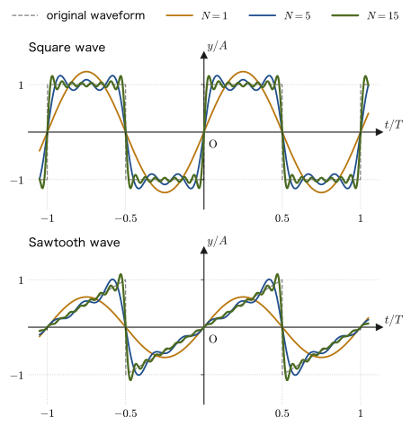
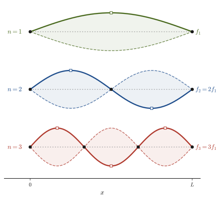
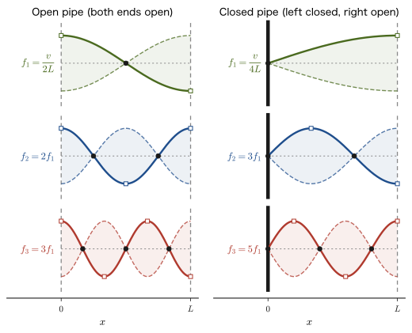
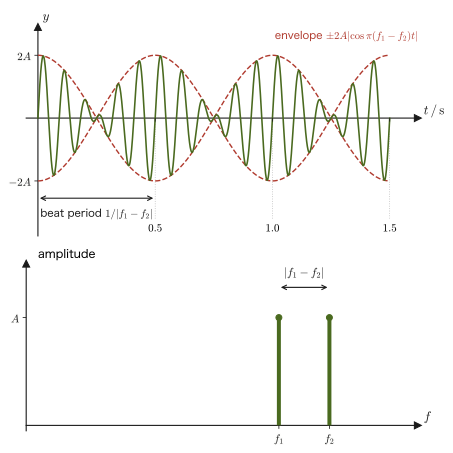
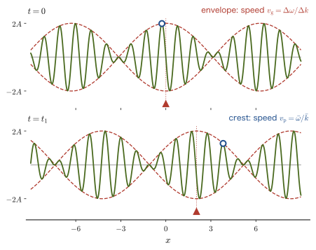
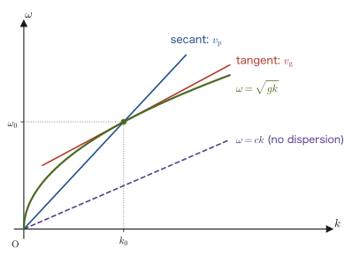
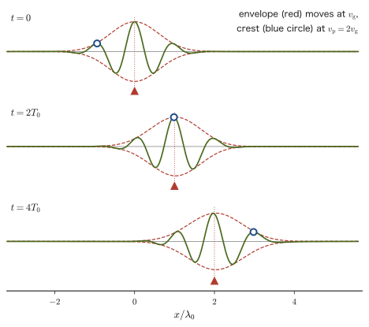
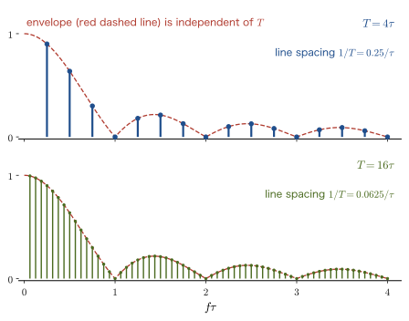
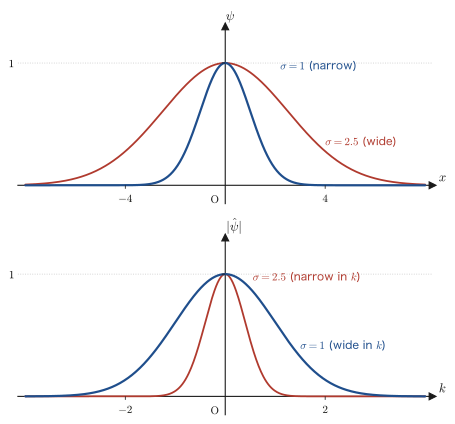

Chapter 17Superposition of Waves and Fourier Analysis — Wave Packets and Group Velocity
When two tuning forks are sounded side by side, the sound alternately swells and fades in a throbbing “wah-wah” (beats). Even when a guitar, a piano, and a flute sound notes of the same pitch, their “timbre” is completely different. A clean pulse signal sent into an optical fiber gradually broadens as it travels a long distance and becomes hard to read. Watching swells roll in from offshore, we notice that each individual crest moves faster than the “clump” of waves as a whole, advancing to the front of the group and disappearing there. These phenomena, which seem unrelated at first glance, can all be explained by a single principle, “waves can be superposed”: the principle of superposition.
In this chapter we first formulate the principle of superposition as the linearity of the wave equation, and confirm that the general solution takes d'Alembert's form $y=f(x-vt)+g(x+vt)$. Next, using the square wave and the sawtooth wave, we see that any periodic waveform can be expressed as a sum of simple sinusoidal waves (a Fourier series), and then we understand, by separation of variables in the wave equation, that the normal modes of a string with both ends fixed or of an air column (standing waves that can exist only at definite frequencies) are themselves the “building blocks” of the Fourier series. In Chapter 11 we constructed the equation of a sinusoidal wave $y=A\sin(\omega t-kx+\phi)$, in Chapter 12 we studied beats and the resonance of air columns and strings, and in Chapter 16 the interference of light; this chapter also serves as the capstone of Part II (Waves), restating all of these from a single point of view.
In the second half, we regard beats as “the simplest wave packet” and derive that the speed at which the clump of waves travels—the group velocity $v_{\mathrm g}=\dd\omega/\dd k$—is in general different from the speed at which each individual crest travels (the phase velocity $v_{\mathrm p}=\omega/k$). Finally, using the Fourier transform, we show that the spatial spread $\Delta x$ of a wave packet and its spread $\Delta k$ in wavenumber are related by $\Delta x\,\Delta k\gtrsim1$. This is the wave-theoretic “prototype” of the uncertainty principle that we will study later in quantum mechanics.
This chapter is also the first place where two mathematical tools learned in the companion volume “University Mathematics” (AD 02)—Fourier series and the Fourier transform (its Chapters 27–30), and the wave equation as a partial differential equation (its Chapter 43)—are connected in earnest to problems in physics. Note that we wrote the speed of light in vacuum as $c_0$ in Chapter 13, but in this chapter we write it as $c$ (they are the same).
- Formulate the principle of superposition as the linearity of the wave equation, derive that the general solution of the one-dimensional wave equation can be written in d'Alembert's form $y=f(x-vt)+g(x+vt)$ (a superposition of a right-moving wave and a left-moving wave), and determine the subsequent motion from the initial conditions
- See that a periodic waveform can be expressed as a sum of sinusoidal waves (a Fourier series), and, taking the square wave and the sawtooth wave as examples, observe how the partial sums approach the original waveform, as well as the Gibbs phenomenon
- Rederive the normal modes of strings and air columns by separation of variables in the wave equation, and understand that the boundary conditions make the natural frequencies discrete and that the normal modes form a basis of the Fourier series (an orthogonal system of functions)
- Regard beats as “the simplest wave packet,” and derive that the envelope of a general wave packet travels at the group velocity $v_{\mathrm g}=\dd\omega/\dd k$
- Through concrete examples of the dispersion relation $\omega(k)$ (deep-water waves, light in a medium, plasma, and crystal lattices), see that the group velocity may differ from the phase velocity, and that a periodic wave loses its shape in a dispersive medium
- Learn through the Fourier transform that the spatial spread $\Delta x$ of a wave packet and the spread $\Delta k$ in wavenumber are related by $\Delta x\,\Delta k\gtrsim1$, as a bridge to the uncertainty principle of quantum mechanics
Source notes: This chapter supplements material not in the notes. Related notes: Yasuhide Mochizuki, Physics Notes: Waves, in its entirety (especially p. 11, “(5) Beats,” and p. 6, “(7) Standing Waves”).
17.1 The Principle of Superposition and d'Alembert's General Solution
In Section 11.2 we have already derived the one-dimensional wave equation $\partial^2y/\partial t^2=v^2\,\partial^2y/\partial x^2$ (Formula 11.1 of Chapter 11) from the equation of motion of a transverse wave on a string, and confirmed that its general solution can be written in the form
\begin{equation} y(x,t)=f(x-vt)+g(x+vt) \label{eq:17-dalembert} \end{equation}This is d'Alembert's general solution (1747; Theorem 11.1 of Chapter 11). $f(x-vt)$ is a wave that travels in the $+x$ direction at speed $v$ without changing shape, $g(x+vt)$ is a wave that travels in the $-x$ direction, and the sinusoidal wave $y=A\sin(\omega t-kx+\phi)$ is a special case of this. In this section we first formulate the general principle behind this result—the principle of superposition—and then, starting from the general solution, derive the formula (d'Alembert's formula) that actually gives how the string moves afterward when its initial state is specified.
Law 17.1: The principle of superposition
Suppose that the equation governing a wave phenomenon is linear (it consists only of terms of first degree in the unknown function $y$, and contains no products or powers such as $y^2$ or $(\partial y/\partial x)^2$). Then any linear combination of two solutions $y_1(x,t),\ y_2(x,t)$
$$ y(x,t)=c_1 y_1(x,t)+c_2 y_2(x,t)\qquad(c_1,c_2\ \text{are arbitrary constants}) $$is also a solution of the same equation. This is called the principle of superposition. Physically, it means that “when two (or more) waves pass through the same place, the displacement of the medium is simply the sum of the displacements that each wave would have produced if it were present alone.”
The one-dimensional wave equation is built only from the linear operators $\partial^2/\partial t^2,\ \partial^2/\partial x^2$, so it falls under this law. The standing wave $y=y_1+y_2=2A\sin\omega t\cos kx$ (the sum of two sinusoidal waves traveling in opposite directions) seen in Chapter 11, and the interference fringes of Young's double-slit experiment in Chapter 16 (the overlap of waves from two slits), are both concrete examples of Law 17.1, and d'Alembert's general solution, Eq. \eqref{eq:17-dalembert}, itself is nothing other than a superposition of two solutions, the “right-moving wave $f(x-vt)$” and the “left-moving wave $g(x+vt)$.”
Caution: When superposition fails
Vibrations of strings and waves of sound and light obey linear equations to a good approximation as long as the amplitude is sufficiently small. When the amplitude becomes large, however, nonlinearity appears (the shock wave seen in Chapter 12 is one example of this), and the principle of superposition no longer holds strictly. Likewise, when intense light such as laser light enters a special crystal, the response of the medium becomes nonlinear and superposition breaks down.
Derivation: A formula that determines the solution from the initial conditions (d'Alembert's formula)
That the general solution, Eq. \eqref{eq:17-dalembert}, exhausts all the solutions of the wave equation follows from the proof of Theorem 11.1 in Section 11.2 (the change of variables to $\xi=x-vt,\ \eta=x+vt$). Here we do only one thing: determine the functions $f,g$ from the initial state.
Let the displacement at time $t=0$ be $y(x,0)=u_0(x)$ (the initial waveform) and the velocity be $\partial y/\partial t(x,0)=w_0(x)$ (the initial velocity distribution); we write $u_0,w_0$ so as not to confuse them with the phase constant $\phi$ or with $\psi$ in the following sections. Substituting $t=0$ into Eq. \eqref{eq:17-dalembert} and into its $t$-derivative $\partial y/\partial t=-vf'(x-vt)+vg'(x+vt)$, we obtain
$$ f(x)+g(x)=u_0(x),\qquad -vf'(x)+vg'(x)=w_0(x) $$Integrating the second equation from $0$ to $x$ and letting $W(x)\equiv\displaystyle\int_0^x w_0(s)\,\dd s$ and $C_0\equiv g(0)-f(0)$, we get $-f(x)+g(x)=W(x)/v+C_0$. Solving this simultaneously with the first equation gives
$$ f(x)=\frac12\left[u_0(x)-\frac{W(x)}{v}-C_0\right],\qquad g(x)=\frac12\left[u_0(x)+\frac{W(x)}{v}+C_0\right] $$Putting these into $f(x-vt)+g(x+vt)$, we find that the constant $C_0$ cancels; since $W(x+vt)-W(x-vt)=\displaystyle\int_{x-vt}^{x+vt}w_0(s)\,\dd s$, we obtain the following formula.
∎
This is called d'Alembert's formula. If the initial velocity is zero ($w_0\equiv0$, the case where the string is released gently from rest), the integral term vanishes and we obtain
\begin{equation} y(x,t)=\frac{u_0(x-vt)+u_0(x+vt)}{2} \label{eq:17-dalembert-atrest} \end{equation}which is a particularly transparent form. It means that the initial waveform $u_0(x)$ splits into two copies with half the amplitude, one of which travels to the right at speed $v$ unchanged while the other travels to the left. On the other hand, if the initial displacement is $0$ and there is only an initial velocity (as when a piano hammer strikes a string, for example), only the second term remains. This formula is for a string without ends (an infinitely long string). For a string with ends, the effect of waves being reflected at the ends and returning is added; we treat this in Section 17.3 as a Fourier sine series.
Example 17.1: Splitting of a pulse
One point of a stretched string is lifted by $h=4.0\ \mathrm{cm}$ from its natural position to make a triangular hump (half-width of the base $a=0.50\ \mathrm{m}$, apex at the origin $x=0$), and then released gently. The initial waveform is
$$ u_0(x)=\begin{cases}h\left(1-\dfrac{|x|}{a}\right) & (|x|\le a)\\[4pt] 0 & (|x|>a)\end{cases} $$and the initial velocity is $w_0(x)=0$. When the speed of waves on the string is $v=2.0\ \mathrm{m/s}$ (determined by $v=\sqrt{S/\rho}$ of Chapter 12), find the displacement $y(x,t)$ at time $t=0.50\ \mathrm{s}$ and position $x=1.2\ \mathrm{m}$.
Solution. Since the initial velocity is 0, Eq. \eqref{eq:17-dalembert-atrest} can be used. Since $vt=2.0\times0.50=1.0\ \mathrm{m}$, we have $x-vt=1.2-1.0=0.2\ \mathrm{m}$ and $x+vt=1.2+1.0=2.2\ \mathrm{m}$. Since $|0.2|\le a=0.50$,
$$ u_0(x-vt)=u_0(0.2)=h\left(1-\frac{0.2}{0.5}\right)=4.0\times0.60=2.4\ \mathrm{cm} $$On the other hand, since $|2.2|>a=0.50$, we have $u_0(x+vt)=u_0(2.2)=0$. This means that the leftward-moving half pulse $g(x+vt)=u_0(x+vt)/2$ has, by time $0.50\ \mathrm{s}$, moved away until its center is at $x=-vt=-1.0\ \mathrm{m}$ (extending over $-1.5\sim-0.5\ \mathrm{m}$), and does not contribute at $x=1.2\ \mathrm{m}$. Therefore
$$ y(1.2,\,0.50)=\frac{u_0(0.2)+u_0(2.2)}{2}=\frac{2.4+0}{2}=1.2\ \mathrm{cm} $$At this point, only the rightward-moving half pulse $f(x-vt)=u_0(x-vt)/2$ (center $x=vt=1.0\ \mathrm{m}$, extending over $0.5\sim1.5\ \mathrm{m}$) is just passing through (Figure 17.2).
17.2 Fourier Series of Periodic Waves — The Square Wave and the Sawtooth Wave
D'Alembert's general solution $y=f(x-vt)+g(x+vt)$ tells us that $f,g$ may be any functions at all, but it does not answer the question “how can $f$ be expressed concretely?” If the wave is a clean sinusoidal wave $y=A\sin(\omega t-kx+\phi)$, like the sound produced by a tuning fork, the matter is simple; but real periodic waves, such as the sound produced by a violin string or the air column of a clarinet, or the waveform of an electronic circuit that outputs a square wave, have much more complicated shapes. What shows its power here is the Fourier series, which we studied in Chapter 28 of the companion volume “University Mathematics” (AD 02). Fourier used this expansion in the early 1800s while investigating how heat is conducted, and his results were collected in his 1822 work “The Analytical Theory of Heat.”
Math Tool: Fourier series of general period $2L$ (review)
A piecewise smooth function $f(x)$ of period $2L$ can be expanded as an infinite series of sines and cosines
\begin{equation} f(x)=\frac{a_0}{2}+\sum_{n=1}^{\infty}\left(a_n\cos\frac{n\pi x}{L}+b_n\sin\frac{n\pi x}{L}\right) \label{eq:17-fourier-general} \end{equation} $$ a_n=\frac1L\int_{-L}^{L}f(x)\cos\frac{n\pi x}{L}\,\dd x,\qquad b_n=\frac1L\int_{-L}^{L}f(x)\sin\frac{n\pi x}{L}\,\dd x $$with coefficients given by the integrals above (University Mathematics, Section 28.2). The reason the coefficients $a_n,b_n$ are determined by these integrals lies in the orthogonality of the trigonometric functions (University Mathematics, Chapter 27: for different $n,m$, $\int_{-L}^{L}\cos\frac{n\pi x}{L}\cos\frac{m\pi x}{L}\,\dd x=0$, and so on). At a point of discontinuity, the series converges to the average of the limits from the left and from the right. For how the series converges across a point of discontinuity (overshoot, the Gibbs phenomenon), see University Mathematics, Chapter 29.
Reinterpreted in the context of waves (with $2L=T$ and $x\to t$), any periodic oscillation with period $T$ in time can be written as a sum of sinusoidal waves (harmonics) whose angular frequencies $\omega_n=n\omega_1$ are integer multiples of the fundamental angular frequency $\omega_1=2\pi/T$:
\begin{equation} y(t)=\frac{a_0}{2}+\sum_{n=1}^{\infty}\left(a_n\cos n\omega_1 t+b_n\sin n\omega_1 t\right) \label{eq:17-fourier-time} \end{equation}The $n=1$ term is the fundamental mode (the first harmonic), and the $n=2$ term is the second harmonic (one octave above the fundamental tone). Note that the English term overtone does not count the fundamental tone, so the second harmonic is the first overtone and the numbering is shifted by one (the “$(n-1)$th overtone” of Chapter 12 follows this way of counting). In this chapter, to avoid confusion, we call the $n$th term the “$n$th harmonic” or the “$n$-fold harmonic.”
Application: Instrument timbre and Fourier series
The sounds produced by a guitar and a piano are heard as having completely different “timbre” even when the fundamental frequency $f_1$ is the same. This is because the amplitude ratios of the harmonics $\sin n\omega_1 t$ to the fundamental mode $\sin\omega_1t$ (the coefficients $a_n,b_n$ in Eq. \eqref{eq:17-fourier-time}) differ from instrument to instrument. In other words, “timbre” is nothing other than the pattern of coefficients obtained when the waveform is expanded in a Fourier series. For example, if a string of length $L$ is plucked and released at a point a distance $x_0$ from one end, the amplitude of the $n$th harmonic is proportional to $\sin(n\pi x_0/L)$ (computed in Example 17.3 of Section 17.3). If the middle of the string ($x_0=L/2$) is plucked, the even-order harmonics vanish, and if the point at $L/4$ is plucked, the fourth harmonic vanishes. This is why plucking a guitar near the bridge gives a hard sound, while plucking it around the middle of the fingerboard gives a round sound.
To appreciate the power of Fourier series, let us actually expand two basic waveforms that often appear in engineering as well—the square wave and the sawtooth wave.
Derivation: Fourier series of the square wave
Consider the square wave (rectangular wave) of period $T$ and amplitude $A$,
$$ y(t)=\begin{cases}A & (0\lt t\lt T/2)\\ -A & (-T/2\lt t\lt0)\end{cases}\qquad(\text{repeated with }T\text{ as the period}) $$Since $y(-t)=-y(t)$ (an odd function), the cosine coefficients are $a_n=0$ (integrating the product of the even function $\cos$ and the odd function $y$ over one period, the contributions cancel each other). Interpreting Eq. \eqref{eq:17-fourier-general} with $L=T/2,\ \omega_1=2\pi/T$, the sine coefficients are
$$ b_n=\frac{2}{T}\int_{-T/2}^{T/2}y(t)\sin n\omega_1t\,\dd t =\frac{4}{T}\int_0^{T/2}A\sin n\omega_1t\,\dd t =\frac{4A}{T}\left[-\frac{\cos n\omega_1t}{n\omega_1}\right]_0^{T/2} $$Since $\omega_1T/2=\pi$, we have $\cos(n\omega_1\cdot T/2)=\cos n\pi=(-1)^n$. Therefore
$$ b_n=\frac{4A}{n\omega_1T}\left[1-(-1)^n\right]=\frac{2A}{n\pi}\left[1-(-1)^n\right] $$(we used $\omega_1T=2\pi$). If $n$ is even then $1-(-1)^n=0$, and if $n$ is odd then $1-(-1)^n=2$, so
\begin{equation} b_n=\begin{cases}\dfrac{4A}{n\pi} & (n\ \text{is odd})\\[4pt] 0 & (n\ \text{is even})\end{cases} \qquad\therefore\quad y(t)=\frac{4A}{\pi}\sum_{k=0}^{\infty}\frac{\sin\bigl((2k+1)\omega_1t\bigr)}{2k+1} \label{eq:17-square-series} \end{equation}∎
Eq. \eqref{eq:17-square-series} shows that the square wave contains only odd-order harmonics (the fundamental mode, the third harmonic, the fifth harmonic, …), with their amplitudes weakened by the factor $1/n$. The reason the square wave contains only odd orders is that it has half-wave symmetry, $y(t+T/2)=-y(t)$ (shifting by half a period reverses the sign). Indeed, since $\sin\bigl(n\omega_1(t+T/2)\bigr)=\sin(n\omega_1t+n\pi)=(-1)^n\sin n\omega_1t$, the even-order components do not change sign under $t\to t+T/2$, and so they are incompatible with $y$, whose sign does reverse. (That the square wave is an odd function only eliminates the cosine components $a_n$; it is the half-wave symmetry that eliminates the even-order sine components.) A pattern of only odd orders also appears in the normal modes of the closed pipe that we saw in Chapter 12 ($f,3f,5f,\ldots$), but the reason there is the boundary condition that one end is a node and the other is an antinode (as we show in Section 17.3, it can be explained formally by the same half-wave symmetry).
Derivation: Fourier series of the sawtooth wave
The sawtooth wave of period $T$ and amplitude $A$ (a waveform that increases monotonically within one period and drops abruptly back to its starting value at the end), given by
$$ y(t)=\frac{2A}{T}t\qquad(-T/2\lt t\lt T/2,\ \text{repeated with}\ T\ \text{as the period}) $$is also an odd function, so $a_n=0$. Using integration by parts (the integral has the form $\int t\sin(n\omega_1t)\,\dd t$), the sine coefficients are
$$ b_n=\frac{2}{T}\int_{-T/2}^{T/2}\frac{2A}{T}t\sin n\omega_1t\,\dd t =\frac{4A}{T^2}\int_{-T/2}^{T/2}t\sin n\omega_1t\,\dd t $$Since $t\sin n\omega_1t$ is an even function, the last expression $=\dfrac{8A}{T^2}\displaystyle\int_0^{T/2}t\sin n\omega_1t\,\dd t$. Integrating by parts ($u=t,\ \dd v=\sin n\omega_1t\,\dd t$), we obtain
$$ \int_0^{T/2}t\sin n\omega_1t\,\dd t=\left[-\frac{t\cos n\omega_1t}{n\omega_1}\right]_0^{T/2}+\frac{1}{n\omega_1}\int_0^{T/2}\cos n\omega_1t\,\dd t =-\frac{T}{2n\omega_1}(-1)^n+\frac{1}{n\omega_1}\left[\frac{\sin n\omega_1t}{n\omega_1}\right]_0^{T/2} $$The second term vanishes because $\sin(n\omega_1T/2)=\sin n\pi=0$. Substituting $\omega_1=2\pi/T$ and simplifying, we obtain
\begin{equation} b_n=(-1)^{n+1}\frac{2A}{n\pi}\qquad\therefore\quad y(t)=\frac{2A}{\pi}\sum_{n=1}^{\infty}\frac{(-1)^{n+1}}{n}\sin n\omega_1t \label{eq:17-sawtooth-series} \end{equation}∎
The square wave (Eq. \eqref{eq:17-square-series}) contained only odd-order harmonics, whereas the sawtooth wave (Eq. \eqref{eq:17-sawtooth-series}), although an odd function, does not have half-wave symmetry and therefore contains harmonics of every order—we see that, even within the same framework of “Fourier series,” the combination of harmonics that appears differs according to the symmetry of the waveform. Also, because both waves have points of discontinuity, their coefficients decrease only as $1/n$ (slow convergence). In contrast, for a triangle wave, which is continuous and has only corners like a polygonal line, the coefficients decrease as $1/n^2$, and the convergence is fast. Figure 17.3 shows the partial sum
$$ y_N(t)=\sum_{n=1}^{N}(\text{Eq. }\eqref{eq:17-square-series}\text{ or }\eqref{eq:17-sawtooth-series}\text{: the }n\text{th term}) $$computed while increasing the number of terms $N$ (the highest order actually included in the sum). The larger $N$ is, the closer the partial sum comes to the original square wave or sawtooth wave; but near a point of discontinuity, an “overshoot” (the Gibbs phenomenon), in which the waveform sticks out beyond the original, remains no matter how much $N$ is increased.

Discussion: The numerical value of the Gibbs phenomenon
It is known that the partial sums of the square wave approach the maximum value $\dfrac{2}{\pi}\mathrm{Si}(\pi)\,A\approx1.179A$ near a point of discontinuity ($\mathrm{Si}(x)=\int_0^x\frac{\sin s}{s}\,\dd s$ is the sine integral). Since the size of the jump is $2A$, the overshoot of $0.179A$ is about $8.9\%$ of the jump. This phenomenon is not inconsistent with the fact that the Fourier series does not “fail to converge” at a point of discontinuity but converges, at the position of the jump, to the average of the left and right values ($0$ for the square wave)—because the point where the overshoot occurs merely moves closer to the point of discontinuity each time $N$ is increased. It is a phenomenon pointed out by Wilbraham in 1848 and pointed out again by Gibbs in 1898–99.
Example 17.2: Harmonic components of a square wave
A square wave (of the form of Eq. \eqref{eq:17-square-series}) has amplitude $A=5.0\ \mathrm{V}$ and period $T=2.0\ \mathrm{ms}$. (1) Find the fundamental frequency $f_1$. (2) Find the amplitudes $b_1,b_3,b_5$ of the fundamental mode and the third and fifth harmonics. (3) Compare the partial sums $y_N$ ($N=1,3,5,7$) at $t=T/4$ with the exact value $y(T/4)=A$.
Solution. (1) $f_1=1/T=1/(2.0\times10^{-3}\ \mathrm{s})=500\ \mathrm{Hz}$.
(2) By Eq. \eqref{eq:17-square-series}, $b_n=4A/(n\pi)$ (for $n$ odd), so
$$ b_1=\frac{4\times5.0}{\pi}\approx6.37\ \mathrm{V},\qquad b_3=\frac{4\times5.0}{3\pi}\approx2.12\ \mathrm{V},\qquad b_5=\frac{4\times5.0}{5\pi}\approx1.27\ \mathrm{V} $$(3) Since $\omega_1=2\pi/T$, at $t=T/4$ we have $\omega_1t=\pi/2$, and $\sin(n\pi/2)$ equals $1,-1,1,-1$ for $n=1,3,5,7$. Here $y_N$ is the sum of the odd-order terms up to order $N$ (for $N=1,3,5,7$ these are one, two, three, and four terms, respectively), so
$$ y_1=\frac{4A}{\pi}\approx6.37\ \mathrm{V},\quad y_3=\frac{4A}{\pi}\left(1-\frac13\right)\approx4.24\ \mathrm{V},\quad y_5=\frac{4A}{\pi}\left(1-\frac13+\frac15\right)\approx5.52\ \mathrm{V},\quad y_7=\frac{4A}{\pi}\left(1-\frac13+\frac15-\frac17\right)\approx4.61\ \mathrm{V} $$and the partial sums approach $A=5.0\ \mathrm{V}$ while oscillating above and below it (for $N=1$ the value is still about 27% too large). As $N\to\infty$, the quantity in parentheses becomes $1-\frac13+\frac15-\frac17+\cdots=\pi/4$ (Leibniz's series), so $y=\dfrac{4A}{\pi}\cdot\dfrac{\pi}{4}=A$, which agrees with the exact value. (Summing up to $N=1001$ (501 terms) gives $5.003\ \mathrm{V}$.)
Related simulator: Fourier Series — Building Shapes by Adding Waves lets you check interactively how the Fourier series approaches various waveforms as the number of terms is increased.
17.3 Normal Modes of Strings and Air Columns — Separation of Variables and the Fourier Basis
In Chapter 12, we saw that when both ends of a string of length $L$ are fixed, the condition that the boundaries (both ends) are always nodes (displacement 0) allows standing waves to form only at the definite frequencies $f_n=nv/(2L)\ (n=1,2,3,\ldots)$. In this section, starting from the one-dimensional wave equation, we derive the same result again by separation of variables, which we learned in the companion volume “University Mathematics” (AD 02), Section 43.4. Doing so reveals that the physical phenomenon of “normal modes” and the mathematical tool of “Fourier series” are in fact two faces of exactly the same thing. Finally, we see that the normal modes of air columns (closed and open pipes) can also be found by the same procedure, merely by changing the boundary conditions.
17.3.1 Normal modes by separation of variables
Derivation: Normal modes of a string fixed at both ends (separation of variables)
The displacement $y(x,t)$ of a string of length $L$ obeys the wave equation $\partial^2y/\partial t^2=v^2\,\partial^2y/\partial x^2$ ($0\lt x\lt L$), and since both ends are fixed, the boundary conditions are
$$ y(0,t)=0,\qquad y(L,t)=0\qquad(\text{for all}\ t\ \text{}) $$In separation of variables, we assume that the solution can be written as a product $y(x,t)=X(x)T(t)$ of a “function of $x$ alone” and a “function of $t$ alone.” Substituting into the wave equation gives $X(x)T''(t)=v^2X''(x)T(t)$, and dividing both sides by $v^2X(x)T(t)$ gives
$$ \frac{T''(t)}{v^2T(t)}=\frac{X''(x)}{X(x)} $$The left side is a function of $t$ alone and the right side is a function of $x$ alone. For them to be identically equal (for all $x,t$), both sides must equal some constant $\lambda$ (independent of $x,t$). We consider cases according to the sign of $\lambda$ and examine whether a solution satisfying the boundary conditions $X(0)=X(L)=0$ exists.
- When $\lambda=\kappa^2\gt0$: the general solution of $X''=\kappa^2X$ is $X=Be^{\kappa x}+Ce^{-\kappa x}$. From $X(0)=0$ we get $C=-B$, so $X=2B\sinh\kappa x$. The condition $X(L)=0$ requires $B\sinh\kappa L=0$, but $\sinh\kappa L\neq0$, so $B=0$; that is, $X\equiv0$.
- When $\lambda=0$: the solution of $X''=0$ is $X=Bx+C$. From $X(0)=0$ we get $C=0$, and from $X(L)=BL=0$ we get $B=0$. Again $X\equiv0$.
- When $\lambda=-k^2\lt0$ ($k\gt0$): the general solution of $X''+k^2X=0$ is $X=B\sin kx+C\cos kx$ (the same form as the equation of simple harmonic motion in Chapter 7). Only this case can have a solution with $X\not\equiv0$.
Thus, for the string to actually vibrate ($y\not\equiv0$), the constant must be negative, so we set $\lambda=-k^2$. The equation then separates into two independent second-order linear homogeneous ordinary differential equations
$$ X''(x)+k^2X(x)=0,\qquad T''(t)+(vk)^2T(t)=0 $$From $X(0)=0$ we get $C=0$; that is, $X(x)=B\sin kx$. The other boundary condition, $X(L)=0$, gives
$$ B\sin kL=0 $$If $B=0$, then $y\equiv0$ (the trivial solution in which the string does not vibrate), so we must have $B\neq0$ and $\sin kL=0$; that is, the condition
\begin{equation} kL=n\pi\qquad\therefore\quad k_n=\frac{n\pi}{L}\qquad(n=1,2,3,\ldots) \label{eq:17-kn} \end{equation}is imposed. The value $n=0$ gives $X\equiv0$, and for a negative integer $n$, $\sin(-|n|\pi x/L)=-\sin(|n|\pi x/L)$ merely changes the sign (which can be absorbed into $B$), so it suffices to consider $n=1,2,3,\ldots$. This is the reason that $k$ (and hence the wavelength $\lambda=2\pi/k$) cannot take continuous values but only the discrete values $k_n$—the boundary conditions discretize the wavenumber. The corresponding spatial shape is $X_n(x)=\sin(n\pi x/L)$, and the time dependence is the general solution $T_n(t)=C_n\cos\omega_nt+D_n\sin\omega_nt$ of $T''+\omega_n^2T=0$ ($\omega_n=vk_n$). Therefore, the particular solutions that satisfy both the equation and the boundary conditions are
\begin{equation} y_n(x,t)=\sin\left(\frac{n\pi x}{L}\right)\bigl(C_n\cos\omega_nt+D_n\sin\omega_nt\bigr),\qquad \omega_n=vk_n=\frac{n\pi v}{L} \label{eq:17-normal-mode} \end{equation}If we set $C_n=A_n\cos\delta_n,\ D_n=-A_n\sin\delta_n$, this can be written as $y_n=A_n\sin(n\pi x/L)\cos(\omega_nt+\delta_n)$. It is a standing wave in which every point of the string performs simple harmonic motion with the same phase and angular frequency $\omega_n$, with an amplitude that varies with $x$ as $\sin(n\pi x/L)$ (Section 11.7).
∎
Definition 17.1: Normal modes (natural modes)
Each $y_n(x,t)$ in Eq. \eqref{eq:17-normal-mode} is called a normal mode or natural mode of the string. In particular, the spatial part $X_n(x)=\sin(n\pi x/L)$ is called the mode shape, and the corresponding angular frequency $\omega_n=n\pi v/L$ (frequency $f_n=\omega_n/2\pi=nv/(2L)$) is called the natural frequency. This agrees perfectly with the result $f_n=nv/(2L)$ that we obtained in Chapter 12 from the discussion of the resonance of a string—separation of variables, which starts from the boundary conditions, has also led us to the same physical conclusion.

17.3.2 Initial conditions and expansion coefficients — the Fourier sine series
The motion that the string actually undergoes, satisfying the initial conditions (the shape of the string at time $t=0$, $y(x,0)=u_0(x)$, and its velocity $\partial y/\partial t(x,0)=w_0(x)$), is not described by the individual normal modes alone: by the principle of superposition of Section 17.1 (Law 17.1), it can be written as a linear combination of all the normal modes
\begin{equation} y(x,t)=\sum_{n=1}^{\infty}\sin\left(\frac{n\pi x}{L}\right)\bigl(C_n\cos\omega_nt+D_n\sin\omega_nt\bigr) \label{eq:17-general-string} \end{equation}Setting $t=0$ gives $u_0(x)=\sum_n C_n\sin(n\pi x/L)$, and differentiating with respect to $t$ and then setting $t=0$ gives $w_0(x)=\sum_n\omega_nD_n\sin(n\pi x/L)$. This is precisely the Fourier series that we saw in Section 17.2—more specifically, the Fourier sine series corresponding to the boundary conditions $X(0)=X(L)=0$ (University Mathematics, Section 28.3). How are the coefficients determined?
Derivation: Determining the expansion coefficients $C_n,D_n$
First we check that the functions $\{\sin(n\pi x/L)\}$ are orthogonal on $0\le x\le L$ (University Mathematics, Chapter 27). By the product-to-sum formula (High School Mathematics, Section 5.5) $\sin\alpha\sin\beta=\tfrac12[\cos(\alpha-\beta)-\cos(\alpha+\beta)]$, we have
$$ \int_0^L\sin\frac{n\pi x}{L}\sin\frac{m\pi x}{L}\,\dd x=\frac12\int_0^L\left[\cos\frac{(n-m)\pi x}{L}-\cos\frac{(n+m)\pi x}{L}\right]\dd x=\frac L2\,\delta_{nm} $$(For $n\ne m$, $\sin((n\mp m)\pi)=0$, so the integral is 0. For $n=m$, $\frac12\int_0^L[1-\cos(2n\pi x/L)]\dd x=L/2$. Here $\delta_{nm}$ is 1 when $n=m$ and 0 otherwise.) Next, we multiply both sides of $u_0(x)=\sum_nC_n\sin(n\pi x/L)$ by $\sin(m\pi x/L)$ and integrate from $0$ to $L$ (assuming that the series may be integrated term by term). On the right side only the term with $m=n$ remains, and it becomes $C_m\cdot L/2$. Therefore
\begin{equation} C_n=\frac2L\int_0^L u_0(x)\sin\frac{n\pi x}{L}\,\dd x \label{eq:17-coef-C} \end{equation}Similarly, from $w_0(x)=\sum_n\omega_nD_n\sin(n\pi x/L)$ we get $\omega_nD_n=\dfrac2L\displaystyle\int_0^Lw_0(x)\sin\dfrac{n\pi x}{L}\,\dd x$; that is, using $\omega_n=n\pi v/L$,
\begin{equation} D_n=\frac{2}{\omega_nL}\int_0^L w_0(x)\sin\frac{n\pi x}{L}\,\dd x=\frac{2}{n\pi v}\int_0^L w_0(x)\sin\frac{n\pi x}{L}\,\dd x \label{eq:17-coef-D} \end{equation}Thus, if we expand the initial state in a sine series, the subsequent motion is completely determined. The coefficients can be determined one by one, independently, because the functions $\sin(n\pi x/L)$ form an orthogonal system of functions.
∎
Example 17.3: Pinching a string at its midpoint and releasing it
The midpoint of a string of length $L$ is pinched, pulled up by $h$, and released gently ($w_0\equiv0$). The initial waveform is $u_0(x)=2hx/L\ (0\le x\le L/2)$, $u_0(x)=2h(L-x)/L\ (L/2\le x\le L)$. (1) Find the coefficients $C_n$. (2) For $h=2.0\ \mathrm{mm}$, find $C_1,C_3,C_5$.
Solution. (1) Since $w_0\equiv0$, Eq. \eqref{eq:17-coef-D} gives $D_n=0$. From Eq. \eqref{eq:17-coef-C}, $C_n$ is
$$ C_n=\frac2L\left[\int_0^{L/2}\frac{2hx}{L}\sin\frac{n\pi x}{L}\,\dd x+\int_{L/2}^{L}\frac{2h(L-x)}{L}\sin\frac{n\pi x}{L}\,\dd x\right] $$If we substitute $x=L-x'$ in the second term, then $\sin\dfrac{n\pi(L-x')}{L}=\sin\left(n\pi-\dfrac{n\pi x'}{L}\right)=(-1)^{n+1}\sin\dfrac{n\pi x'}{L}$, so the second term is $(-1)^{n+1}$ times the first term. Hence $C_n=\dfrac2L\bigl[1+(-1)^{n+1}\bigr]I_n$ ($I_n$ is the integral of the first term). If $n$ is even, $C_n=0$; if $n$ is odd, $C_n=\dfrac4LI_n$. Setting $a=n\pi/L$ and using integration by parts, $\int x\sin ax\,\dd x=-\dfrac{x\cos ax}{a}+\dfrac{\sin ax}{a^2}$, we obtain
$$ I_n=\frac{2h}{L}\left[-\frac{x\cos ax}{a}+\frac{\sin ax}{a^2}\right]_0^{L/2}=\frac{2h}{L}\left[-\frac{L}{2a}\cos\frac{n\pi}{2}+\frac{1}{a^2}\sin\frac{n\pi}{2}\right] $$When $n$ is odd, $\cos(n\pi/2)=0$, so $I_n=\dfrac{2h}{L}\cdot\dfrac{L^2}{n^2\pi^2}\sin\dfrac{n\pi}{2}=\dfrac{2hL}{n^2\pi^2}\sin\dfrac{n\pi}{2}$. Therefore
\begin{equation} C_n=\frac{8h}{n^2\pi^2}\sin\frac{n\pi}{2}\quad(n\ \text{odd}),\qquad C_n=0\quad(n\ \text{even}) \label{eq:17-pluck-center} \end{equation}(2) $C_1=\dfrac{8\times2.0}{\pi^2}\approx1.62\ \mathrm{mm}$. Since $\sin(3\pi/2)=-1$, $C_3=-\dfrac{C_1}{9}\approx-0.180\ \mathrm{mm}$. Since $\sin(5\pi/2)=1$, $C_5=\dfrac{C_1}{25}\approx0.0648\ \mathrm{mm}$. The even-order terms vanish, and only the odd-order terms remain, decreasing rapidly as $1/n^2$, so the sound of a string plucked at its midpoint is a clear tone consisting almost entirely of the fundamental (with a little of the third harmonic).
Application: Plucking position and timbre
If we carry out the same calculation for a string pinched not at the midpoint but at a point a distance $x_0$ from one end ($u_0$ is a triangle with its apex at $x=x_0$), we obtain $C_n=\dfrac{2hL^2}{n^2\pi^2x_0(L-x_0)}\sin\dfrac{n\pi x_0}{L}$ (setting $x_0=L/2$ reproduces Eq. \eqref{eq:17-pluck-center}). The harmonics $n$ for which $\sin(n\pi x_0/L)=0$ vanish, so plucking at $x_0=L/4$ eliminates the harmonics $n=4,8,\ldots$, and the closer $x_0$ is to the bridge (the end of the string), the more strongly the higher-order harmonics remain, giving a harder sound. In this way, the difference in timbre among musical instruments is determined by the manner of excitation and by the proportions in which the normal modes of strings and air columns (the Fourier basis) are superposed (Exercise 17.3).
17.3.3 The three viewpoints are three faces of the same phenomenon
Intuition: d'Alembert's solution, Fourier series, and normal modes
The “d'Alembert's general solution $f(x-vt)+g(x+vt)$” (Section 17.1), the “Fourier series $\sum_n(a_n\cos+b_n\sin)$” (Section 17.2), and the “normal modes of a boundary-value problem $\sum_n\sin(n\pi x/L)(\cdots)$” (this section) that we have seen so far in this chapter are not three separate stories; they are the results of viewing one and the same equation, the one-dimensional wave equation, from different angles. The correspondence between them is immediately visible if we use the product-to-sum formula $\sin\alpha\cos\beta=\tfrac12[\sin(\alpha+\beta)+\sin(\alpha-\beta)]$. Since $\omega_n=vk_n$, one of the normal modes is
$$ \sin(k_nx)\cos(\omega_nt)=\frac12\bigl[\sin k_n(x+vt)+\sin k_n(x-vt)\bigr] $$which is the “sum of a sinusoidal wave traveling to the left and one traveling to the right”; that is, it has the form $g(x+vt)+f(x-vt)$. A standing wave was a superposition of two waves traveling in opposite directions (Chapter 11). When $w_0\equiv0$, summing this over all terms of Eq. \eqref{eq:17-general-string} gives $y=\tfrac12[U(x-vt)+U(x+vt)]$, where $U(x)=\sum_nC_n\sin(n\pi x/L)$. The function $U$ is the function obtained by extending the initial waveform $u_0$ as an odd function and repeating it with period $2L$. This is exactly d'Alembert's formula, Eq. \eqref{eq:17-dalembert-atrest}, and it expresses the way the sign is inverted at each reflection at an end (reflection at a fixed end, Section 14.1) as a translation of the extended waveform. Thus, for a string of finite length, the view that “a traveling wave is repeatedly reflected at the ends” and the view that “normal modes (standing waves) are superposed” turn out to be two different representations of the same motion. In both views, what underlies them is the common mathematics of Fourier series.
Example 17.4: Normal modes of a guitar string
A guitar string of length $L=0.65\ \mathrm{m}$ and linear density $\rho=4.0\times10^{-3}\ \mathrm{kg/m}$ is stretched under a tension $S=80\ \mathrm{N}$. (1) Find the speed $v$ of transverse waves traveling along the string. (2) Find the fundamental frequency $f_1$ and the frequency $f_3$ of the third harmonic. (3) If the midpoint $x=L/2$ of the string is lightly touched with a finger while the string is plucked, which normal modes remain? Answer using the mode shape $X_n(x)=\sin(n\pi x/L)$.
Solution. (1) From $v=\sqrt{S/\rho}$ in Chapter 12, $v=\sqrt{80/(4.0\times10^{-3})}=\sqrt{2.0\times10^4}\approx141\ \mathrm{m/s}$.
(2) By Definition 17.1, $f_n=nv/(2L)$, so
$$ f_1=\frac{v}{2L}=\frac{141\ \mathrm{m/s}}{2\times0.65\ \mathrm{m}}\approx109\ \mathrm{Hz},\qquad f_3=3f_1\approx326\ \mathrm{Hz} $$(This is close to the pitch of the fifth string of a guitar (the note A, about $110\ \mathrm{Hz}$).)
(3) Touching the midpoint makes the midpoint a node (displacement 0). The value $X_n(L/2)=\sin(n\pi/2)$ is $0$ when $n$ is even (the midpoint is a node) and $\pm1$ when $n$ is odd (the midpoint is an antinode). Since the midpoint can no longer move, the odd-order normal modes, in which the midpoint is an antinode, vanish, and only the even-order normal modes $n=2,4,\ldots$, in which the midpoint is a node, remain. The lowest sound is therefore $f_2=2f_1\approx218\ \mathrm{Hz}$, exactly one octave above the fundamental (this is the technique actually used for the natural harmonic at the 12th fret of a guitar).
17.3.4 The normal modes of air columns also form a Fourier basis
The displacement $X(x,t)$ of the air in an air column (its shift along the tube axis) obeys the same one-dimensional wave equation $\partial^2y/\partial t^2=v^2\partial^2y/\partial x^2$ (here $v$ is the speed of sound; in Chapter 12 the speed of sound was written $V$, but in this chapter we write $v$ for the speed of waves in general). Only the boundary conditions are different. As we saw in Section 12.4, at a closed end the air cannot move, so the displacement has a node ($y=0$), and at an open end the displacement has an antinode (the displacement is maximal; that is, $\partial y/\partial x=0$). If we carry out the separation of variables $y=X(x)T(t)$, we obtain the same $X''+k^2X=0$ as for the string, so we need only solve it with different boundary conditions.
- String fixed at both ends: $X(0)=0$ and $X(L)=0$. $X=\sin kx$, $k_n=n\pi/L$ ($n=1,2,\ldots$).
- Open pipe (both ends are open ends): $X'(0)=0$ and $X'(L)=0$. For the general solution $X=B\cos kx+C\sin kx$, $X'(0)=Ck=0$ gives $C=0$, and $X'(L)=-Bk\sin kL=0$ gives $kL=n\pi$. $X=\cos(n\pi x/L)$, $k_n=n\pi/L$ ($n=1,2,\ldots$. The value $n=0$ merely shifts the whole air column uniformly and is not a vibration).
- Closed pipe ($x=0$ is the closed end, $x=L$ is the open end): $X(0)=0$ and $X'(L)=0$. From $X(0)=0$ we get $X=B\sin kx$, and from $X'(L)=Bk\cos kL=0$ we get $kL=(2n-1)\pi/2$. $X=\sin\bigl((2n-1)\pi x/(2L)\bigr)$, $k_n=(2n-1)\pi/(2L)$ ($n=1,2,\ldots$).
From the wavenumber $k_n$ we obtain $\omega_n=vk_n$ and $f_n=\omega_n/2\pi$; the results are summarized in Table 17.1.
| System | Boundary conditions (displacement $X$) | Mode shape $X_n(x)$ | Natural frequency $f_n$ |
|---|---|---|---|
| String fixed at both ends | $X(0)=0,\ X(L)=0$ | $\sin\dfrac{n\pi x}{L}$ | $\dfrac{nv}{2L}$ ($f_1,2f_1,3f_1,\ldots$) |
| Open pipe | $X'(0)=0,\ X'(L)=0$ | $\cos\dfrac{n\pi x}{L}$ | $\dfrac{nv}{2L}$ ($f_1,2f_1,3f_1,\ldots$) |
| Closed pipe | $X(0)=0,\ X'(L)=0$ | $\sin\dfrac{(2n-1)\pi x}{2L}$ | $\dfrac{(2n-1)v}{4L}$ ($f_1,3f_1,5f_1,\ldots$) |

The reason why the natural frequencies of a closed pipe are only odd multiples of the fundamental can also be read off from this. The mode shapes $\sin\bigl((2n-1)\pi x/(2L)\bigr)$ of the closed pipe form the family consisting only of the odd-order harmonics of a sine function of period $4L$. Every one of them has the half-wave symmetry that its sign is reversed under $x\to x+2L$, which is the same as the reason that the square wave seen in Section 17.2 contains only odd-order terms. In every system, the family of mode shapes is orthogonal on $0\le x\le L$ (for the open pipe, $\int_0^L\cos\frac{n\pi x}{L}\cos\frac{m\pi x}{L}\,\dd x=\frac L2\delta_{nm}$; for the closed pipe, $\int_0^L\sin\frac{(2n-1)\pi x}{2L}\sin\frac{(2m-1)\pi x}{2L}\,\dd x=\frac L2\delta_{nm}$), and the coefficients for expanding an initial state can be determined one by one by the same procedure as for Eq. \eqref{eq:17-coef-C}. In other words, the normal modes of strings and air columns are all Fourier bases (orthogonal systems of functions) suited to the system in question.
Caution: Nodes and antinodes of displacement and of pressure are interchanged
Since sound waves are longitudinal, a node of the air displacement (a point that does not move) is a place where the surrounding air is compressed from both sides, and it is an antinode of the pressure (density) change, where the change is maximal. Conversely, at an antinode of displacement (the open end) the air can move freely, so the pressure remains nearly atmospheric and does not change, and it is a node of pressure. In this book, as in Chapter 12, nodes and antinodes refer to the displacement.
Example 17.5: Natural frequencies of closed and open pipes
For the air column in a pipe of length $L=0.50\ \mathrm{m}$, let the speed of sound be $v=340\ \mathrm{m/s}$ (neglect the end correction). (1) Find the natural frequencies $f_1,f_2,f_3$ of the open pipe. (2) Find the natural frequencies $f_1,f_2,f_3$ of the closed pipe. (3) Compare the fundamentals of the two, and state the series of frequencies not contained in the closed pipe.
Solution. (1) From Table 17.1, the open pipe has $f_n=nv/(2L)$. Since $v/(2L)=340/(2\times0.50)=340\ \mathrm{Hz}$, we have $f_1=340\ \mathrm{Hz}$, $f_2=680\ \mathrm{Hz}$, $f_3=1020\ \mathrm{Hz}$.
(2) The closed pipe has $f_n=(2n-1)v/(4L)$. Since $v/(4L)=340/(4\times0.50)=170\ \mathrm{Hz}$, we have $f_1=170\ \mathrm{Hz}$, $f_2=3\times170=510\ \mathrm{Hz}$, $f_3=5\times170=850\ \mathrm{Hz}$.
(3) The fundamental of the closed pipe, $170\ \mathrm{Hz}$, is exactly half of the fundamental of the open pipe, $340\ \mathrm{Hz}$; that is, it is one octave lower. The closed pipe does not contain vibrations at even multiples of the fundamental ($340,\ 680,\ 1020,\ldots\mathrm{Hz}$). This is one reason for the difference in timbre between the flute (nearly an open pipe) and the clarinet (nearly a closed pipe).
17.4 Beats — The Simplest Wave Packet
The beats we saw in Chapter 12 arise when two sounds of slightly different frequencies, $y_1=A\sin2\pi f_1t,\ y_2=A\sin2\pi f_2t$, are superimposed, which gives
$$ y=y_1+y_2=2A\cos\left(2\pi\cdot\frac{f_1-f_2}{2}t\right)\sin\left(2\pi\cdot\frac{f_1+f_2}{2}t\right) $$Here the amplitude of the “rapidly oscillating component” (with mean frequency $\bar f=(f_1+f_2)/2$) is modulated by the “slowly varying component” (with frequency $|f_1-f_2|/2$, half the difference). It is precisely this structure—a rapid oscillation wrapped in a slowly varying envelope—that is the essence of a wave packet. Beats are the simplest example of a wave packet, made by superimposing just two sinusoidal waves. With only two waves, however, the envelope repeats periodically and produces a train of wave packets. To make a single isolated wave packet we need waves with a continuous distribution of many wavenumbers, which we treat in Section 17.6.
This formula can also be seen as treating the “addition of two sinusoidal waves” as a Fourier series made of two lines (a Fourier series with only two terms). If we plot the frequency $f$ on the horizontal axis and the amplitude of each component on the vertical axis (the frequency spectrum), the spectrum of beats consists of two bars standing at $f_1$ and $f_2$ (a line spectrum) (Figure 17.6). The spacing $|f_1-f_2|$ between the two lines is itself the beat frequency. As the number of lines increases and the spacing becomes finer, the line spectrum approaches a continuous spectrum—this leads to the Fourier transform of Section 17.6.

Example 17.6: Line spectrum of beats
Two tones of the same amplitude $A$ and frequencies $f_1=440\ \mathrm{Hz}$ and $f_2=444\ \mathrm{Hz}$ are sounded simultaneously. (1) Give the positions and the spacing of the two lines in the spectrum. (2) Find the mean frequency (the rapid oscillation) and the frequency and period of the beats. (3) Find the frequency of the envelope $2A\cos\bigl(2\pi\cdot\frac{f_1-f_2}{2}t\bigr)$ itself.
Solution. (1) The lines stand at $440\ \mathrm{Hz}$ and $444\ \mathrm{Hz}$, and the spacing is $|f_1-f_2|=4\ \mathrm{Hz}$ (both lines have height $A$).
(2) The mean frequency is $\bar f=(440+444)/2=442\ \mathrm{Hz}$. The intensity of the sound (the absolute value of the amplitude) reaches its maximum $|f_1-f_2|=4$ times per second, so the beat frequency is $4\ \mathrm{Hz}$ and the period is $1/4=0.25\ \mathrm{s}$.
(3) The frequency of $\cos\bigl(2\pi\cdot2\,t\bigr)$ is $|f_1-f_2|/2=2\ \mathrm{Hz}$. Within one period this cosine takes positive and negative values once each, but the intensity we hear is determined by the absolute value (its square), so the alternation of loud and soft repeats four times per second, that is, at twice the frequency of the cosine.
So far we have treated the waves as functions of time alone. Let us now reconsider beats as a wave propagating through space—that is, in a form that also depends on the position $x$. Following the conventions of Chapter 11, we take the two waves to be
$$ y_1=A\sin(\omega_1t-k_1x),\qquad y_2=A\sin(\omega_2t-k_2x) $$(with $\omega_1\approx\omega_2$, $k_1\approx k_2$—we consider the case where not only the frequencies but also the wavenumbers differ slightly). Using the sum-to-product formula $\sin P+\sin Q=2\sin\dfrac{P+Q}{2}\cos\dfrac{P-Q}{2}$ (High School Mathematics, Section 5.6; the same formula we used in the derivation of beats in Chapter 12), we obtain
\begin{equation} y=y_1+y_2=2A\cos\left(\frac{\Delta\omega}{2}t-\frac{\Delta k}{2}x\right)\sin(\bar\omega t-\bar kx) \label{eq:17-beat-envelope} \end{equation}where $\bar\omega=(\omega_1+\omega_2)/2,\ \bar k=(k_1+k_2)/2$ (the means) and $\Delta\omega=\omega_1-\omega_2,\ \Delta k=k_1-k_2$ (the differences). Eq. \eqref{eq:17-beat-envelope} has the form of a “fast” sinusoidal wave of angular frequency $\bar\omega$ and wavenumber $\bar k$ (the carrier wave) modulated by a “slow” cosine wave (the envelope) of angular frequency $\Delta\omega/2$ and wavenumber $\Delta k/2$.
The envelope factor $\cos\bigl((\Delta\omega\,t-\Delta k\,x)/2\bigr)$ alternates in sign, but the intensity of the wave (the absolute value of the amplitude) is largest when $|\cos|=1$, and such “peaks” appear repeatedly each time the phase $(\Delta\omega\,t-\Delta k\,x)/2$ changes by $\pi$. If we fix $t$, the spacing between peaks (the spatial wavelength of the beats) is
\begin{equation} \Lambda=\frac{2\pi}{|\Delta k|} \label{eq:17-beat-lambda} \end{equation}This is the spatial version of the period $1/|f_1-f_2|=2\pi/|\Delta\omega|$ of the beats in time; since $k=2\pi/\lambda$, it can also be written $1/\Lambda=|1/\lambda_1-1/\lambda_2|$, which has the same form as $f_{\text{beat}}=|f_1-f_2|$ for beats in time. (The period of the envelope cosine itself is $4\pi/|\Delta k|=2\Lambda$; at adjacent peaks the cosine has opposite signs, and the phase of the carrier wave is shifted by $\pi$.)

Let us follow how the peaks of the envelope move. The positions of the peaks are determined by the condition that the phase of the envelope is constant,
$$ \frac{\Delta\omega}{2}t-\frac{\Delta k}{2}x=\text{constant}\qquad\Longrightarrow\qquad \Delta\omega\,t-\Delta k\,x=\text{constant} $$Solving this for $x$ gives $x=(\Delta\omega/\Delta k)\,t+\text{constant}$. Therefore the peaks of the beats move in the positive $x$ direction at speed
$$ \frac{\Delta\omega}{\Delta k} $$On the other hand, the crests of the fast carrier wave $\sin(\bar\omega t-\bar kx)$ inside it move, as before, at the phase velocity $\bar\omega/\bar k$. Taking the limit $\Delta\omega,\Delta k\to0$ (letting the differences in frequency and wavenumber between the two waves shrink without bound), we have $\Delta\omega/\Delta k\to\dd\omega/\dd k$—this is the group velocity, which we shall introduce formally in the next section. Beats are the simplest example showing that the speed at which a wave packet moves (the group velocity) is in general different from the phase velocity of the waves inside it.
Example 17.7: Spatial wavelength of beats
Two sinusoidal waves of slightly different wavelengths $\lambda_1=0.998\ \mathrm{m}$ and $\lambda_2=1.002\ \mathrm{m}$ are superimposed. (1) Find the wavenumbers $k_1,k_2$, the mean wavenumber $\bar k$, and the wavenumber difference $\Delta k=k_1-k_2$. (2) Find the spacing between beat peaks, $\Lambda=2\pi/|\Delta k|$. (3) Find the period of the envelope cosine $\cos(\Delta k\,x/2)$ itself.
Solution. (1) $k_1=2\pi/0.998\approx6.2958\ \mathrm{rad/m}$ and $k_2=2\pi/1.002\approx6.2706\ \mathrm{rad/m}$, so
$$ \bar k=\frac{k_1+k_2}{2}\approx6.283\ \mathrm{rad/m},\qquad \Delta k=k_1-k_2\approx0.0251\ \mathrm{rad/m} $$(2) From Eq. \eqref{eq:17-beat-lambda},
$$ \Lambda=\frac{2\pi}{\Delta k}\approx\frac{2\pi}{0.02513}\approx2.50\times10^{2}\ \mathrm{m} $$(Finding $\Lambda=250\ \mathrm{m}$ from $1/\Lambda=|1/\lambda_1-1/\lambda_2|=1/0.998-1/1.002=4.000\times10^{-3}\ \mathrm{m^{-1}}$ gives the same result.) (3) The period of the cosine $\cos(\Delta k\,x/2)$ is $2\pi/(\Delta k/2)=4\pi/\Delta k=2\Lambda\approx500\ \mathrm{m}$, and the cosine has opposite signs at adjacent peaks. When two waves whose wavelengths differ by only $0.4\%$ are superimposed, they form a “beat wave packet” in which the waves reinforce each other about every $250\ \mathrm{m}$, a distance much longer than the wavelength of each individual wave (about $1\ \mathrm{m}$). The smaller the wavenumber difference $\Delta k$, the longer the spacing between peaks.
Example 17.8: Speeds of the beat envelope and the carrier wave
The (wavenumber, angular frequency) pairs of two sinusoidal waves traveling in a dispersive medium are $(k_1,\omega_1)=(2.10\ \mathrm{rad/m},\ 4.54\ \mathrm{rad/s})$ and $(k_2,\omega_2)=(1.90\ \mathrm{rad/m},\ 4.32\ \mathrm{rad/s})$. When the two are superimposed, find (1) the speed $\bar\omega/\bar k$ at which the crests of the carrier wave move and (2) the speed $\Delta\omega/\Delta k$ at which the beat envelope moves, and compare them.
Solution. $\bar k=(2.10+1.90)/2=2.00\ \mathrm{rad/m}$, $\bar\omega=(4.54+4.32)/2=4.43\ \mathrm{rad/s}$, $\Delta k=2.10-1.90=0.20\ \mathrm{rad/m}$, $\Delta\omega=4.54-4.32=0.22\ \mathrm{rad/s}$.
(1) The speed of the carrier-wave crests is $\bar\omega/\bar k=4.43/2.00\approx2.2\ \mathrm{m/s}$.
(2) The speed of the envelope is $\Delta\omega/\Delta k=0.22/0.20=1.1\ \mathrm{m/s}$.
The speed of the crests (the phase velocity) is about twice the speed of the envelope (the group velocity), and within the clump of waves the crests overtake the envelope from behind and move toward the front. (These numbers are close to the values for deep-water waves, $\omega=\sqrt{gk}$; we shall actually derive that relation in Section 17.5.)
A bit of history: Musical instruments and tuning forks have long been tuned by means of the beats of sound, but it was only in the nineteenth century that beats were expressed in equations as a superposition of waves and the “speed at which a clump of waves travels” was considered (the concept of group velocity is said to have been introduced by Hamilton around 1839 and systematized by Rayleigh in his 1877 book “The Theory of Sound”).
17.5 Wave Packets, Group Velocity, and Dispersion Relations
In the previous section, from beats (the superposition of two waves), we saw that the envelope of a wave packet travels at speed $\Delta\omega/\Delta k$. This, however, concerns only two waves. An actual wave packet (for example, a clump of waves traveling over a water surface, or a pulse of light) is made up of a superposition of waves with a large number of continuously distributed wavenumbers. Here, too, we shall derive, for a general wave packet, that the envelope travels at $\dd\omega/\dd k$.
Caution: Complex representation and the sign of the phase
Up to this point in this book, we have written a sinusoidal wave in the form $y=A\sin(\omega t-kx+\phi)$ (this corresponds to the imaginary part of the complex number $e^{i(\omega t-kx)}$). In the derivation below and in the Fourier transform (Section 17.6), we use the complex exponential function $e^{i(kx-\omega t)}$, which is convenient for calculation. By Euler's formula, $e^{i(kx-\omega t)}=\cos(kx-\omega t)+i\sin(kx-\omega t)$, whose real part is $\cos(kx-\omega t)=\cos(\omega t-kx)$ and whose imaginary part is $\sin(kx-\omega t)=-\sin(\omega t-kx)$. That is, taking the imaginary part gives the opposite sign from this book's $\sin(\omega t-kx)$ (the sign convention for the phase is reversed). However, the physical displacement is obtained by taking the real part (or the imaginary part) of a complex number, and, as in $\cos(kx-\omega t)=\sin(\omega t-kx+\pi/2)$, either convention represents the same form of wave traveling in the $+x$ direction. Below, we compute with complex numbers and then take the real part of the result to obtain the actual wave.
Derivation: The envelope of a wave packet travels at the group velocity
Consider a superposition of waves whose wavenumbers are distributed over a narrow range around $k_0$ (of width $\Delta k\ll k_0$):
$$ \psi(x,t)=\int A(k)\,e^{i(kx-\omega(k)t)}\,\dd k $$Here $A(k)$ is the weight of each wavenumber and $\omega(k)$ is the dispersion relation of the medium. Expanding $\omega(k)$ in a Taylor series about $k_0$ (University Mathematics, Chapter 4) and letting $q=k-k_0$, we obtain
$$ \omega(k)=\omega_0+v_{\mathrm g}\,q+\frac12\omega''(k_0)\,q^2+\cdots,\qquad \omega_0=\omega(k_0),\quad v_{\mathrm g}=\omega'(k_0)=\left.\diff{\omega}{k}\right|_{k_0} $$Substituting this into $kx-\omega t=(k_0x-\omega_0t)+q(x-v_{\mathrm g}t)-\frac12\omega''q^2t-\cdots$ and taking the fast part $e^{i(k_0x-\omega_0t)}$ outside the integral, we get
$$ \psi(x,t)=e^{i(k_0x-\omega_0t)}\int A(k_0+q)\,e^{iq(x-v_{\mathrm g}t)}\,e^{-\frac i2\omega''q^2t}\,\dd q $$If the terms of order $q^2$ and higher can be neglected ($\tfrac12|\omega''|(\Delta k)^2\,t\ll1$, that is, for $t\ll2/(|\omega''|(\Delta k)^2)$), the integral is just $F(s)=\int A(k_0+q)e^{iqs}\,\dd q$ evaluated at $s=x-v_{\mathrm g}t$, and we have
$$ \psi(x,t)\approx e^{i(k_0x-\omega_0t)}\,F(x-v_{\mathrm g}t) $$That is, the expression factorizes into two factors. The first factor $e^{i(k_0x-\omega_0t)}$ is a fast sinusoidal wave (the carrier wave) traveling at the phase velocity $\omega_0/k_0$, and the second factor $F(x-v_{\mathrm g}t)$ is a slowly varying envelope ($|\psi|=|F(x-v_{\mathrm g}t)|$) that travels at speed $v_{\mathrm g}=\dd\omega/\dd k$ without changing its shape. In the case of beats ($A(k)$ with only two wavenumbers), it reduces to the two terms $q=\pm\Delta k/2$, and the result agrees with Eq. \eqref{eq:17-beat-envelope}.
As time passes and the $q^2$ term can no longer be neglected, the phase shifts differ from one wavenumber to another, so the shape of the envelope breaks down and its width grows (wave packet spreading). If $\omega''(k_0)=0$, that is, if $\omega\propto k$ (no dispersion), this term is absent from the start, and the wave packet keeps traveling without changing its shape. The amount of spreading is calculated in Exercise 17.6.
∎
Definition 17.2: Phase velocity and group velocity
The relation $\omega=\omega(k)$ between the angular frequency $\omega$ and the wavenumber $k$ is called the dispersion relation. Associated with this, we define the following two quantities:
\begin{equation} v_{\mathrm p}\equiv\frac{\omega}{k}\qquad(\text{phase velocity}) \label{eq:17-vp} \end{equation} \begin{equation} v_{\mathrm g}\equiv\frac{\dd\omega}{\dd k}\qquad(\text{group velocity}) \label{eq:17-vg} \end{equation}The phase velocity is the speed at which each individual “crest” of the wave travels (it is exactly the $v=\omega/k=f\lambda$ treated in Chapter 11). The group velocity is the speed at which the whole “clump” of the wave packet (the amplitude envelope) travels when the wavenumbers composing the packet are all close to $k$ ($\Delta k\ll k$, a “quasi-monochromatic” wave packet). In a region where absorption is weak and the dispersion is gentle, the group velocity is also the speed at which energy and signals are actually carried.
Caution: When the group velocity is no longer the “speed of the signal”
Very close to a frequency at which the medium strongly absorbs light (anomalous dispersion, $\dd n/\dd\omega\lt0$), the formula can give a $v_{\mathrm g}$ that exceeds the speed of light $c$ in vacuum or even becomes negative. In that region, however, the pulse is strongly absorbed and its shape is badly distorted, so the very premise of the group velocity—that “the envelope travels while keeping its shape”—does not hold. Even in such cases, the speed at which information or energy is carried does not exceed the speed of light $c$ in vacuum (relativity and causality). The group velocity can be regarded as the speed of a signal only in the region described in the definition above, where absorption is weak and the dispersion is gentle.
When $\omega(k)$ is proportional to $k$ ($\omega=vk$, where $v$ is a constant independent of $k$), $v_{\mathrm p}=\omega/k=v$ and $v_{\mathrm g}=\dd\omega/\dd k=v$, so the phase velocity and the group velocity coincide. Such a wave is called a non-dispersive wave. Waves on a string ($v=\sqrt{S/\rho}$ in Chapter 11 and Chapter 12, independent of $k$) and light in vacuum ($\omega=ck$; that light is an electromagnetic wave was seen in Section 14.6, and electromagnetism shows that $c$ is a constant independent of the wavelength) are examples of this. In general, however, $\omega(k)$ is not necessarily proportional to $k$, and then $v_{\mathrm p}\neq v_{\mathrm g}$—the wave is then said to be dispersive. Below we look at several concrete examples.
Dispersion relation example ①: Gravity waves on deep water
Among the waves formed on the surface of the sea or a lake, gravity waves—those whose wavelength is shorter than twice the water depth (“deep-water waves,” for which the water is deeper than half the wavelength; in this case the water is unaffected by the bottom) and longer than a few centimeters, so that surface tension is negligible—obey the following dispersion relation, according to fluid dynamics (this is beyond the scope of this book, so we do not derive it, but it is a well-known result):
\begin{equation} \omega=\sqrt{gk} \label{eq:17-deepwater} \end{equation}($g$ is the gravitational acceleration). This form can also be guessed from dimensional analysis. If the only quantities that determine the motion of the wave are the gravitational acceleration $g$ ($\mathrm{m/s^2}$) and the wavenumber $k$ ($\mathrm{m^{-1}}$), the only combination that makes an angular frequency ($\mathrm{s^{-1}}$) is $\sqrt{gk}$, so $\omega=C\sqrt{gk}$ ($C$ is a dimensionless constant). The fluid-dynamics calculation gives $C=1$. Since Eq. \eqref{eq:17-deepwater} is not $\omega\propto k$, deep-water waves are clearly dispersive. The phase velocity and group velocity are found to be
$$ v_{\mathrm p}=\frac{\omega}{k}=\frac{\sqrt{gk}}{k}=\sqrt{\frac{g}{k}},\qquad v_{\mathrm g}=\frac{\dd\omega}{\dd k}=\frac{1}{2}\sqrt{\frac{g}{k}}=\frac{v_{\mathrm p}}{2} $$That is, for deep-water waves the speed at which the wave packet (the group of waves) travels is exactly half the speed at which the individual wave crests travel. If we watch the wave groups of a swell coming in from offshore or of a ship's wake, we see new crests being born at the back of the group, passing forward through the group, and disappearing at the front (Figure 17.9). On the other hand, for small ripples with wavelengths shorter than about $1.7\ \mathrm{cm}$, surface tension rather than gravity acts as the restoring force, the dispersion relation changes to $\omega^2=gk+(\sigma/\rho_{\mathrm m})k^3$ ($\sigma$ is the surface tension and $\rho_{\mathrm m}$ is the density of water), and the relation between the two velocities is reversed, becoming $v_{\mathrm g}=\tfrac32v_{\mathrm p}$ (Exercise 17.5). The fine ripples formed on the outside when a pebble is dropped into a pond are ripples of this kind.
Conversely, for shallow-water waves, whose wavelength is much longer than the water depth, $\omega=\sqrt{gh}\,k$ ($h$ is the water depth); there is no dispersion, and the speed is $\sqrt{gh}$. In the open ocean at a depth of $4000\ \mathrm{m}$ this is $\sqrt{9.8\times4000}\approx198\ \mathrm{m/s}$ (about $710\ \mathrm{km}$ per hour), and tsunamis propagate at this speed.
Dispersion relation example ②: Light in a dispersive medium
The dispersion of light seen in Section 14.6 (the phenomenon in which a prism separates colors) was caused by the slight variation of the refractive index $n$ with the vacuum wavelength (or the frequency $\omega$)—normal dispersion, in which $n$ is larger for shorter wavelengths (its physical origin is discussed in Section 13.4). In a medium, the phase velocity is $v_{\mathrm p}=c/n(\omega)$, and the wavenumber and the angular frequency are related by $k=n(\omega)\,\omega/c$. To find the group velocity, it is clearer to compute $\dd k/\dd\omega$ instead of $\dd\omega/\dd k$ and then take the reciprocal:
$$ \frac{\dd k}{\dd\omega}=\frac{1}{c}\left(n+\omega\frac{\dd n}{\dd\omega}\right) \qquad\therefore\quad v_{\mathrm g}=\frac{\dd\omega}{\dd k}=\frac{c}{\,n+\omega\,\dfrac{\dd n}{\dd\omega}\,} $$If $n$ does not depend on $\omega$ (no dispersion), this returns to $v_{\mathrm g}=c/n=v_{\mathrm p}$. In a medium with normal dispersion ($\dd n/\dd\omega>0$), such as glass or an optical fiber, however, the denominator is larger than $n$, so $v_{\mathrm g}\lt v_{\mathrm p}$. When a light pulse (a wave packet containing many wavelength components) travels through glass or an optical fiber, the group velocity differs slightly from component to component, so the width of the pulse gradually broadens as it advances (pulse broadening). This is one of the main causes of signal degradation in long-distance optical fiber communication, and special fibers and compensation techniques that cancel the dispersion have been put into practical use.
Dispersion relation example ③: Plasmas and X-rays — when the phase velocity exceeds $c$
In the dispersion formula $n^2=1+\dfrac{N_{\mathrm e}e^2}{\varepsilon_0m_{\mathrm e}(\omega_0^2-\omega^2)}$ of Section 13.4, consider the case in which the electrons are not bound ($\omega_0=0$, free electrons), that is, a plasma such as the ionosphere (a gas containing free electrons). Then $n^2=1-\omega_{\mathrm p}^2/\omega^2$ ($N_{\mathrm e}$ is the number density of electrons, $e$ is the elementary charge, and $\omega_{\mathrm p}=\sqrt{N_{\mathrm e}e^2/(\varepsilon_0m_{\mathrm e})}$ is the plasma angular frequency). Since the wavenumber is $k=n\omega/c$, we have $c^2k^2=n^2\omega^2$, and the dispersion relation is
\begin{equation} \omega^2=\omega_{\mathrm p}^2+c^2k^2 \label{eq:17-plasma} \end{equation}(The fact that $n\lt1$ for X-rays in matter also follows from an equation of the same form.) Waves with $\omega\gt\omega_{\mathrm p}$ propagate, whereas waves with $\omega\lt\omega_{\mathrm p}$ do not propagate, because $k$ becomes imaginary, and are reflected. Differentiating both sides of Eq. \eqref{eq:17-plasma} with respect to $k$ gives $2\omega\,\dd\omega/\dd k=2c^2k$, and therefore
$$ v_{\mathrm p}=\frac{\omega}{k}=\frac{c}{\sqrt{1-\omega_{\mathrm p}^2/\omega^2}}=\frac{c}{n}\gt c,\qquad v_{\mathrm g}=\frac{\dd\omega}{\dd k}=\frac{c^2k}{\omega}=c\sqrt{1-\frac{\omega_{\mathrm p}^2}{\omega^2}}=cn\lt c,\qquad v_{\mathrm p}v_{\mathrm g}=c^2 $$The phase velocity (the speed at which the crests travel) exceeds $c$, but the group velocity, which carries energy and signals, is smaller than $c$. The phase velocity is merely the speed at which the “pattern” of crests and troughs of the wave moves, and it carries no signal, so this does not contradict relativity (Section 13.3). The relation $v_{\mathrm p}v_{\mathrm g}=c^2$ appears unchanged also in the matter waves of relativistic particles ($v_{\mathrm g}$ is the speed of the particle).
Advanced Topic: The dispersion relation of a crystal lattice
Consider a one-dimensional crystal (a model in which a solid is viewed as a collection of particles joined by springs, as in Section 19.1) in which atoms of mass $m$ are lined up at spacing $a$ and neighboring atoms are connected by springs of spring constant $\kappa$ (the same symbol as in Chapter 11). The equation of motion for the displacement $u_n$ of the $n$th atom is $m\ddot u_n=\kappa(u_{n+1}+u_{n-1}-2u_n)$. Substituting the traveling-wave form $u_n=e^{i(kna-\omega t)}$ gives $-m\omega^2=\kappa(e^{ika}+e^{-ika}-2)=-4\kappa\sin^2(ka/2)$, and we obtain the dispersion relation
\begin{equation} \omega=2\sqrt{\frac\kappa m}\left|\sin\frac{ka}{2}\right| \label{eq:17-lattice} \end{equation}In the long-wavelength limit ($ka\ll1$), $\omega\approx a\sqrt{\kappa/m}\,k$ and there is no dispersion; $v=a\sqrt{\kappa/m}$ is the speed of sound in the crystal. As $k$ increases, however, the curve flattens, $v_{\mathrm g}=a\sqrt{\kappa/m}\cos(ka/2)$ becomes smaller, and at the edge $k=\pi/a$ (wavelength $2a$) of the Brillouin zone ($-\pi/a\lt k\le\pi/a$; because of the periodicity of the lattice, a $k$ outside this range cannot be distinguished from a $k$ inside it), $v_{\mathrm g}=0$ (this is a standing wave in which neighboring atoms vibrate in antiphase, so no energy is carried). For example, with $\kappa=20\ \mathrm{N/m}$, $m=4.0\times10^{-26}\ \mathrm{kg}$, and $a=0.30\ \mathrm{nm}$, the speed of sound is $v\approx6.7\ \mathrm{km/s}$, and the maximum angular frequency is $2\sqrt{\kappa/m}\approx4.5\times10^{13}\ \mathrm{rad/s}$ ($7\ \mathrm{THz}$). This dispersion relation forms the foundation of the discussion of lattice vibrations in Part VII (Statistical Mechanics), including the Debye model, which explains the specific heat of solids.

Intuition: Why is the slope of the tangent the group velocity?
The definition of the group velocity, $v_{\mathrm g}=\dd\omega/\dd k$, is itself the slope of the tangent at a point on the graph of $\omega(k)$. The phase velocity $v_{\mathrm p}=\omega/k$, on the other hand, is the slope of the straight line (the secant) joining the origin to that point. If the curve is a straight line (a proportional relation through the origin), the slope of the tangent and the slope of the secant are the same everywhere—this is why $v_{\mathrm g}=v_{\mathrm p}$ in the non-dispersive case. If the curve is concave down (as for deep-water waves, with $\omega\propto\sqrt k$), the slope of the tangent is smaller than that of the secant, and $v_{\mathrm g}\lt v_{\mathrm p}$.

Discussion: When a periodic wave propagates through a dispersive medium
The Fourier series of Section 17.2 and the dispersion of Section 17.5 are connected as follows. A periodic wave of fundamental angular frequency $\omega_1$ (for example, a square wave) is a sum of harmonics $b_n\sin(n\omega_1t)$. When it propagates to a place a distance $x$ away, the $n$th component becomes $b_n\sin(n\omega_1t-k_nx)$, and the whole wave is
$$ y(x,t)=\sum_nb_n\sin(n\omega_1t-k_nx),\qquad k_n=k(n\omega_1) $$Without dispersion ($\omega=vk$), every component has $k_n=n\omega_1/v$, and $y(x,t)=\sum_nb_n\sin\bigl(n\omega_1(t-x/v)\bigr)$ is the original waveform shifted by the time $x/v$; that is, the waveform travels at speed $v$ without losing its shape. When $\omega(k)$ is not proportional to $k$, however, the phase velocity $\omega/k$ differs from component to component, so as the wave advances the phase relationship among the components shifts, and the waveform breaks down. This is why a sharp square pulse becomes blunted or spread out in a long electric wire or optical fiber.
Example 17.9: Phase velocity and group velocity of deep-water waves
There is a deep-water wave (a swell) of wavelength $\lambda=20\ \mathrm{m}$. Taking $g=9.8\ \mathrm{m/s^2}$, find (1) the wavenumber $k$ and the angular frequency $\omega$, (2) the phase velocity $v_{\mathrm p}$, and (3) the group velocity $v_{\mathrm g}$.
Solution. (1) $k=2\pi/\lambda=2\pi/20\approx0.3142\ \mathrm{rad/m}$. By Eq. \eqref{eq:17-deepwater},
$$ \omega=\sqrt{gk}=\sqrt{9.8\times0.3142}\approx\sqrt{3.079}\approx1.755\ \mathrm{rad/s} $$(2) $v_{\mathrm p}=\omega/k=1.755/0.3142\approx5.59\ \mathrm{m/s}$. (One can check that $v_{\mathrm p}=\sqrt{g/k}=\sqrt{9.8/0.3142}\approx5.59\ \mathrm{m/s}$ gives the same value.)
(3) $v_{\mathrm g}=v_{\mathrm p}/2\approx2.79\ \mathrm{m/s}$. Each wave crest travels at about $5.6\ \mathrm{m}$ per second, but the wave packet (the wave group) as a whole travels at only half that, about $2.8\ \mathrm{m}$ per second.
Example 17.10: Group velocity in a dispersive medium (a model calculation)
As a simplified model of glass that exhibits normal dispersion, assume that near $\omega_0$ the refractive index is given by a linear function of the frequency, $n(\omega)=n_0+\alpha\omega$ ($n_0=1.49$, $\alpha=7.0\times10^{-18}\ \mathrm{s}$. These are model values chosen so that $n(\omega_0)$ is about $1.5$, the value for ordinary glass, and the magnitude of $\alpha$ is of the order of magnitude of $\dd n/\dd\omega$ for ordinary glass at visible wavelengths (about $10^{-17}\ \mathrm{s}$)). At the angular frequency $\omega_0=3.0\times10^{15}\ \mathrm{rad/s}$ (visible light), find (1) the refractive index $n(\omega_0)$, (2) the phase velocity $v_{\mathrm p}$, and (3) the group velocity $v_{\mathrm g}$. Take $c=2.998\times10^8\ \mathrm{m/s}$.
Solution. (1) $n(\omega_0)=1.49+7.0\times10^{-18}\times3.0\times10^{15}=1.49+0.021=1.511$.
(2) $v_{\mathrm p}=c/n=\dfrac{2.998\times10^8}{1.511}\approx1.984\times10^8\ \mathrm{m/s}$.
(3) Since $\dd n/\dd\omega=\alpha=7.0\times10^{-18}\ \mathrm{s}$, we have $\omega_0\alpha=0.021$, and
$$ v_{\mathrm g}=\frac{c}{n+\omega\,\dd n/\dd\omega}=\frac{2.998\times10^8}{1.511+0.021}=\frac{2.998\times10^8}{1.532}\approx1.957\times10^8\ \mathrm{m/s} $$Indeed, $v_{\mathrm g}\approx1.96\times10^8\ \mathrm{m/s}\lt v_{\mathrm p}\approx1.98\times10^8\ \mathrm{m/s}$, which confirms that in a medium with normal dispersion ($\dd n/\dd\omega>0$) the group velocity is smaller than the phase velocity. The difference is small, about $1.4\%$, but in a long optical fiber this difference accumulates and shows up as a broadening of the pulse width.
Example 17.11: Radio waves propagating through the ionosphere
Let the electron density of the ionosphere be $N_{\mathrm e}=1.0\times10^{12}\ \mathrm{m^{-3}}$. (1) Find the plasma frequency $f_{\mathrm p}=\omega_{\mathrm p}/2\pi$. (2) Find the refractive index $n$, the phase velocity $v_{\mathrm p}$, and the group velocity $v_{\mathrm g}$ when a shortwave radio wave of frequency $f=15\ \mathrm{MHz}$ propagates. (3) What happens to a shortwave radio wave of $f=5.0\ \mathrm{MHz}$?
Solution. (1) $\omega_{\mathrm p}=\sqrt{N_{\mathrm e}e^2/(\varepsilon_0m_{\mathrm e})}=\sqrt{\dfrac{1.0\times10^{12}\times(1.602\times10^{-19})^2}{8.854\times10^{-12}\times9.109\times10^{-31}}}\approx5.64\times10^{7}\ \mathrm{rad/s}$, so $f_{\mathrm p}=\omega_{\mathrm p}/2\pi\approx8.98\times10^6\ \mathrm{Hz}=8.98\ \mathrm{MHz}$.
(2) $n=\sqrt{1-(f_{\mathrm p}/f)^2}=\sqrt{1-(8.98/15)^2}=\sqrt{1-0.358}\approx0.801$. $v_{\mathrm p}=c/n\approx1.25c\approx3.74\times10^8\ \mathrm{m/s}$, $v_{\mathrm g}=cn\approx0.801c\approx2.40\times10^8\ \mathrm{m/s}$. The product satisfies $v_{\mathrm p}v_{\mathrm g}=c^2$. The phase velocity exceeds $c$, but the speed at which the radio wave carries a signal (the group velocity) is smaller than $c$.
(3) Since $f=5.0\ \mathrm{MHz}\lt f_{\mathrm p}=8.98\ \mathrm{MHz}$, we have $n^2=1-(8.98/5.0)^2\lt0$, and the wave does not propagate inside the ionosphere but is reflected. This is why shortwave communication, which uses reflection from the ionosphere, can reach the other side of the Earth.
17.6 The Fourier Transform and the Width of a Wave Packet — $\Delta x\,\Delta k\gtrsim1$
The Fourier series of Section 17.2 expressed a periodic waveform as a sum of sinusoidal waves with discrete wavenumbers $k_n=n\pi/L$ (or frequencies $n\omega_1$). However, the isolated wave packets we saw in Section 17.4 and Section 17.5 are nonperiodic waveforms that are spatially localized (nearly zero outside a certain range). How can we represent a waveform that has no period by a Fourier series?
17.6.1 The limit of an infinite period
Derivation: Fourier series of a rectangular pulse train
Consider a train $y(t)$ of pulses of width $\tau$ repeating with period $T$ (equal to $A$ for $|t|\lt\tau/2$ and to $0$ elsewhere in $|t|\le T/2$, with $\tau\lt T$). Since $y(-t)=y(t)$ (an even function), $b_n=0$. With $\omega_1=2\pi/T$ we have
$$ \frac{a_0}{2}=\frac1T\int_{-\tau/2}^{\tau/2}A\,\dd t=\frac{A\tau}{T},\qquad a_n=\frac2T\int_{-\tau/2}^{\tau/2}A\cos n\omega_1t\,\dd t=\frac{2}{T}\cdot\frac{2A\sin(n\omega_1\tau/2)}{n\omega_1}=\frac{2A}{n\pi}\sin\frac{n\pi\tau}{T} $$(We used $\omega_1T=2\pi$.) If we let $f_n=n/T$ be the frequency of the $n$th harmonic, then $n\pi\tau/T=\pi f_n\tau$, so we can write
\begin{equation} a_n=\frac{2A\tau}{T}\cdot\frac{\sin(\pi f_n\tau)}{\pi f_n\tau} \label{eq:17-pulse-train} \end{equation}That is, the heights of the lines of the line spectrum lie along the same envelope regardless of the period $T$ (of the form $\sin x/x$, with its first zero at $f=1/\tau$), and the spacing between the lines is $f_{n+1}-f_n=1/T$.
∎
As we increase the period $T$ (keeping the pulse width $\tau$ fixed), the spacing $1/T$ of the line spectrum becomes finer and finer, and the height of each line becomes smaller in proportion to $\tau/T$. The lines approach a continuous curve (Figure 17.10). The limit $T\to\infty$ is the case in which only a single isolated pulse exists (there is no period), and its spectrum becomes continuous. This is the Fourier transform.

Example 17.12: From a pulse train to a continuous spectrum
A train of pulses of width $\tau=1.0\ \mathrm{\mu s}$ and height $A=1.0\ \mathrm{V}$ repeats with period $T$. (1) For $T=10\ \mathrm{\mu s}$, find the spacing of the lines of the line spectrum, the number of nonzero lines up to the first zero of the envelope, and $a_1$. (2) Find the same quantities for $T=100\ \mathrm{\mu s}$, and state what happens as $T\to\infty$.
Solution. (1) The line spacing is $1/T=1/(10\times10^{-6}\ \mathrm{s})=1.0\times10^5\ \mathrm{Hz}=100\ \mathrm{kHz}$. The first zero of the envelope is at $f=1/\tau=1.0\ \mathrm{MHz}$. This is the line with $n=f/(1/T)=T/\tau=10$, and the height of this line is $0$ (in Eq. \eqref{eq:17-pulse-train}, $\sin(\pi f_n\tau)=\sin\pi=0$). Therefore the nonzero lines up to the first zero are the nine lines $n=1,2,\ldots,9$. $a_1=\dfrac{2A}{\pi}\sin\dfrac{\pi\tau}{T}=\dfrac{2\times1.0}{\pi}\sin(0.1\pi)\approx0.197\ \mathrm{V}$.
(2) The line spacing is $1/T=10\ \mathrm{kHz}$, the number of nonzero lines up to the first zero is $T/\tau-1=99$, and $a_1=\dfrac{2}{\pi}\sin(0.01\pi)\approx0.0200\ \mathrm{V}$. Increasing the period tenfold makes the line spacing $1/10$ as large, the number of lines about ten times larger, and the height of each line about $1/10$ as large. As $T\to\infty$ the line spacing approaches 0, and the lines join without gaps into a continuous spectrum (a curve with the shape of the envelope). The Fourier series of a periodic pulse train turns into the Fourier transform of an isolated pulse. Note also that the width up to the first zero, $1/\tau=1.0\ \mathrm{MHz}$, is inversely proportional to the pulse width $\tau$ and does not depend on $T$.
17.6.2 The relation between the Fourier transform and the width of a wave packet
Math Tool: From the Fourier series to the Fourier transform (review)
As we learned in Section 30.1 of the companion volume “University Mathematics” (AD 02), when we take the limit $L\to\infty$ in which the period goes to infinity in the Fourier series of period $2L$, Eq. \eqref{eq:17-fourier-general}, the spacing of the discrete wavenumbers $k_n=n\pi/L$ approaches 0 so that they become a continuous wavenumber $k$, and the series (sum) is replaced by an integral. What we obtain in this way is the Fourier transform
$$ \hat\psi(k)=\int_{-\infty}^{\infty}\psi(x)\,e^{-ikx}\,\dd x,\qquad \psi(x)=\frac{1}{2\pi}\int_{-\infty}^{\infty}\hat\psi(k)\,e^{ikx}\,\dd k $$Thus a wave packet $\psi(x)$ (a localized waveform) can be understood as a superposition, with weight $\hat\psi(k)$, of plane waves $e^{ikx}$ of continuously distributed wavenumber $k$—a generalization of the principle of superposition (Law 17.1) from a discrete sum to a continuous integral. Attaching the time factor gives $e^{i(kx-\omega t)}$, so the caution in Section 17.5 (complex representation and the sign of the phase) applies as it stands. The Fourier transform of a rectangular pulse (University Mathematics, Section 30.2) and the Fourier transform of a Gaussian function (University Mathematics, Section 30.4) are concrete examples of this.
Now, a Fourier transform pair $\psi(x)\leftrightarrow\hat\psi(k)$ has an important property that holds in general: the narrower (more localized) $\psi(x)$ is in the $x$ direction, the broader $\hat\psi(k)$ is in the $k$ direction (and conversely). Intuitively, as we saw in Section 17.4, the smaller the wavenumber difference $\Delta k$ (the closer the wave is to monochromatic), the longer the distance $\Lambda=2\pi/\Delta k$ between successive peaks of the beats (the wider the wave packet)—and if we push this relation to its limit, it says that to make a wave packet narrower and narrower spatially (more localized), we must superpose waves over a wider range of wavenumbers.
Derivation: The $\Delta x\,\Delta k$ relation for a rectangular pulse (order-of-magnitude estimate)
Consider a rectangular pulse of width $\Delta x$, $\psi(x)=1\ (|x|\lt\Delta x/2)$, $\psi(x)=0\ (|x|\gt\Delta x/2)$. Using the result of University Mathematics, Section 30.2, its Fourier transform is
$$ \hat\psi(k)=\int_{-\Delta x/2}^{\Delta x/2}e^{-ikx}\,\dd x=\Delta x\cdot\frac{\sin(k\,\Delta x/2)}{k\,\Delta x/2} $$which is a “sinc function” ($\mathrm{sinc}$, a function that oscillates while decaying). This function takes its maximum value $\Delta x$ at $k=0$, and first becomes 0 where $k\,\Delta x/2=\pi$, that is, at $k=2\pi/\Delta x$. If we estimate a measure of the “spread” of $\hat\psi(k)$ by the width up to this first zero, $\Delta k\sim2\pi/\Delta x$, we obtain the relation
\begin{equation} \Delta x\,\Delta k\sim2\pi \label{eq:17-uncertainty-order} \end{equation}This is an order-of-magnitude estimate in which $\Delta x$ is the “full width of the main part” of the pulse and $\Delta k$ is the “full width of the main part” of the spectrum (the width up to the first zero). The coefficient (either $2\pi$ or a number of order 1 close to it) depends on how the width is defined (full width, half width, or the standard deviation described later), but for any localized waveform the following inequality holds roughly:
\begin{equation} \Delta x\,\Delta k\gtrsim1 \label{eq:17-uncertainty} \end{equation}If we try to make a wave packet spatially narrower (to make $\Delta x$ smaller), $\Delta k$ (the spread of wavenumbers needed to build the wave packet) must inevitably become larger. This is a constraint that comes from the mathematical structure of waves themselves, and it is a universal property that applies to every kind of wave (waves on a string, sound waves, light waves, and the matter waves that we will study later).
∎
The fact that the width of a wave packet and the spread of its Fourier transform are inversely proportional can be confirmed in its cleanest form with the Fourier transform of the Gaussian function, which we studied in University Mathematics, Section 30.4. Consider a Gaussian wave packet of spread $\sigma$,
$$ \psi(x)=e^{-x^2/(2\sigma^2)} $$Its Fourier transform is $\hat\psi(k)=\sigma\sqrt{2\pi}\,e^{-\sigma^2k^2/2}$, that is, a Gaussian function of spread $1/\sigma$ (the smaller $\sigma$ is, that is, the narrower the wave packet in $x$ space, the broader it is in $k$ space; Figure 17.11).
Let us now define the “width” precisely. Viewing $|\psi(x)|^2$ as a probability distribution, let $\Delta x$ be its standard deviation (a measure of the scatter), and likewise let $\Delta k$ be the standard deviation of $|\hat\psi(k)|^2$. For the Gaussian, $|\psi|^2\propto e^{-x^2/\sigma^2}$ and $|\hat\psi|^2\propto e^{-\sigma^2k^2}$, so
$$ \Delta x=\frac{\sigma}{\sqrt2},\qquad \Delta k=\frac{1}{\sqrt2\,\sigma}\qquad\therefore\quad \Delta x\,\Delta k=\frac12 $$and the product does not depend on $\sigma$. In fact, for any waveform, when the widths are measured by standard deviations, the following holds as a mathematical theorem:
\begin{equation} \Delta x\,\Delta k\ge\frac12 \label{eq:17-uncertainty-exact} \end{equation}Equality holds only for the Gaussian (the Gaussian is the form that makes $\Delta k$ as small as possible for a given $\Delta x$). The “$\gtrsim1$” in Eq. \eqref{eq:17-uncertainty} is a rough guide obtained when the widths are estimated by crude values such as full widths, and the exact form that uses standard deviations is Eq. \eqref{eq:17-uncertainty-exact}. Note also that for the rectangular pulse, since $|\hat\psi|^2$ decays only as $1/k^2$, the standard deviation of $k$ is not finite (it diverges). This is why, for the rectangular pulse, we used the width up to the first zero as the measure rather than the standard deviation. There is also a convention in which the half-width at which the amplitude of the Gaussian $\psi(x)$ falls to $e^{-1/2}$ of its maximum value is taken as $\Delta x=\sigma$ and the same half-width of $\hat\psi$ is taken as $\Delta k=1/\sigma$; in that case the product is $1$ (the $1$ in Eq. \eqref{eq:17-uncertainty} corresponds to this value).

The same relation holds for time and frequency. A pulse (a sound, light, or electrical signal) of duration $\Delta t$ necessarily contains frequency components spread over about $\Delta\omega\sim2\pi/\Delta t$ (for a rectangular pulse, $\Delta t\,\Delta\omega\sim2\pi$; measured by standard deviations, $\Delta t\,\Delta\omega\ge1/2$).
\begin{equation} \Delta t\,\Delta\omega\gtrsim1 \label{eq:17-time-freq} \end{equation}The shorter the pulse, the wider the range of frequencies it contains. In the beats of the previous section, the longer the interval $1/|f_1-f_2|$ of a single cycle of loud and soft (the closer the two frequencies), the smaller the frequency spread $|f_1-f_2|$. Also, ultrashort-pulse laser light with pulses of the order of femtoseconds ($10^{-15}\ \mathrm{s}$) has a broad spectrum containing many wavelength components (Exercise 17.8).
Preview of quantum mechanics
When we later study quantum mechanics, we will learn that particles (such as electrons and photons) also behave as a kind of “wave” (a matter wave, or de Broglie wave), and that the wavenumber $k$ and the momentum $p$ are related by $p=\hbar k$ ($\hbar=h/2\pi$, where $h$ is the Planck constant). Multiplying both sides of Eq. \eqref{eq:17-uncertainty} ($\Delta x\,\Delta k\gtrsim1$) by $\hbar$ then yields the relation
$$ \Delta x\,\Delta p\gtrsim\hbar,\qquad\text{strictly (measured by standard deviations)}\quad \Delta x\,\Delta p\ge\frac\hbar2 $$The latter is obtained by substituting $p=\hbar k$ into Eq. \eqref{eq:17-uncertainty-exact}. This is none other than Heisenberg's uncertainty principle (1927); rather than a mysterious phenomenon peculiar to quantum mechanics, it is a consequence of the mathematical property of waves themselves that we have seen in this chapter: “when waves are superposed to make them localized, a spread in wavenumber inevitably arises.” The uncertainty principle of quantum mechanics is nothing other than the application to matter waves of the relation we have seen in this section. The time version, Eq. \eqref{eq:17-time-freq}, also becomes $\Delta t\,\Delta E\gtrsim\hbar$ when we use $E=\hbar\omega$.
Example 17.13: $\Delta x\,\Delta k$ of a Gaussian wave packet
Suppose a wave packet can be approximated by the Gaussian $\psi(x)=e^{-x^2/(2\sigma^2)}$ with $\sigma=2.0\times10^{-6}\ \mathrm{m}$ ($2\ \mathrm{\mu m}$). (1) Find $\Delta x,\Delta k$, measured by standard deviations, and their product, and compare with Eq. \eqref{eq:17-uncertainty-exact}. (2) Find the product when the half-width $\sigma$ at which the amplitude falls to $e^{-1/2}$ and $1/\sigma$ are taken as the widths.
Solution. (1) $\Delta x=\sigma/\sqrt2=2.0\times10^{-6}/1.414\approx1.41\times10^{-6}\ \mathrm{m}$, $\Delta k=1/(\sqrt2\,\sigma)=1/(1.414\times2.0\times10^{-6})\approx3.54\times10^{5}\ \mathrm{rad/m}$. The product is $\Delta x\,\Delta k=1.41\times10^{-6}\times3.54\times10^5=0.500$ (exactly $1/2$, regardless of the value of $\sigma$). This is the special case that realizes the lower bound $1/2$ of Eq. \eqref{eq:17-uncertainty-exact} with equality, and it shows that a Gaussian wave packet is the waveform for which, for a given spatial width, the spread of wavenumbers is smallest (the most “efficiently” localized waveform).
(2) $\Delta x=\sigma=2.0\times10^{-6}\ \mathrm{m}$ and $\Delta k=1/\sigma=5.0\times10^5\ \mathrm{rad/m}$, and the product is $\sigma\times(1/\sigma)=1$. This is the value corresponding to the $1$ in the “$\gtrsim1$” of Eq. \eqref{eq:17-uncertainty}.
17.7 Summary and Exercises
17.7.1 Summary
- The principle of superposition (Law 17.1): a linear combination of solutions of a linear wave equation is again a solution. The general solution of the one-dimensional wave equation can be written in d'Alembert's form $y=f(x-vt)+g(x+vt)$ (Theorem 11.1 of Chapter 11), which is nothing but a superposition of a “rightward wave” and a “leftward wave.” From the initial conditions, the motion is determined by d'Alembert's formula, Eq. \eqref{eq:17-dalembert-formula}.
- A periodic waveform can be expressed as a sum of sinusoidal waves by a Fourier series (Eq. \eqref{eq:17-fourier-general}). Because of half-wave symmetry, the square wave contains only odd-order harmonics (Eq. \eqref{eq:17-square-series}), whereas the sawtooth wave contains harmonics of all orders (Eq. \eqref{eq:17-sawtooth-series}); the more terms $N$ we include, the closer the partial sum comes to the original waveform. Near a discontinuity, an overshoot of about 9% of the jump remains (the Gibbs phenomenon, Figure 17.3).
- The normal modes (Definition 17.1) of strings and air columns are found by the method of separation of variables applied to the wave equation, and the boundary conditions discretize the wavenumber (Eq. \eqref{eq:17-kn}). A string fixed at both ends has $\sin(n\pi x/L)$, an open pipe has $\cos(n\pi x/L)$, and a closed pipe has $\sin((2n-1)\pi x/2L)$; each of these forms an orthogonal system of functions (a Fourier basis) (Table 17.1). The initial conditions are expressed through the coefficients $C_n,D_n$ (Eqs. \eqref{eq:17-coef-C} and \eqref{eq:17-coef-D}), and d'Alembert's view and the normal-mode view are two different representations of the same motion.
- Beats are the superposition of two sinusoidal waves whose frequencies and wavenumbers differ slightly (two lines of a line spectrum), and they are the simplest wave packet (more precisely, a train of wave packets) (Eq. \eqref{eq:17-beat-envelope}). The envelope of a general wave packet travels not at the phase velocity $v_{\mathrm p}=\omega/k$ but at the group velocity $v_{\mathrm g}=\dd\omega/\dd k$ (Definition 17.2), whereas the crests of the carrier wave travel at the phase velocity.
- When the dispersion relation $\omega(k)$ is not proportional to $k$ (that is, when there is dispersion), $v_{\mathrm g}\neq v_{\mathrm p}$. For deep-water waves $\omega=\sqrt{gk}$ we have $v_{\mathrm g}=v_{\mathrm p}/2$; for light in a medium with normal dispersion, $v_{\mathrm g}\lt v_{\mathrm p}$; and for waves in plasmas and for X-rays, $v_{\mathrm p}v_{\mathrm g}=c^2$, so that $v_{\mathrm p}\gt c\gt v_{\mathrm g}$. In a dispersive medium, the shape of a periodic wave breaks down and the width of a wave packet spreads.
- A localized wave packet is expressed by the Fourier transform as a superposition of continuously distributed wavenumbers, and in the limit of infinite period, $T\to\infty$, the line spectrum of the Fourier series becomes a continuous spectrum. Between the spatial spread $\Delta x$ and the wavenumber spread $\Delta k$ there holds, as a rough guide, $\Delta x\,\Delta k\gtrsim1$ (Eq. \eqref{eq:17-uncertainty}), and, if the spreads are measured by standard deviations, the strict relation $\Delta x\,\Delta k\ge1/2$ (Eq. \eqref{eq:17-uncertainty-exact}, with equality for a Gaussian). The same holds for time and frequency: $\Delta t\,\Delta\omega\gtrsim1$. Through $p=\hbar k$, this is the wave-theoretic prototype of the uncertainty principle $\Delta x\,\Delta p\ge\hbar/2$ of quantum mechanics, which we will study later.
17.7.2 Summary of Part II (Waves)
Let us now look back over the whole of Part II, “Waves.” In Chapter 11, starting from a review of simple harmonic motion, we derived the wave equation and learned the general theory common to all waves: the equation of a sinusoidal wave $y=A\sin(\omega t-kx+\phi)$, interference of waves, standing waves, Huygens's principle, the laws of reflection and refraction, and diffraction. In Chapter 12 we applied it to sound waves and studied the Doppler effect, beats, and the resonance of air columns and strings. In Chapter 13 through Chapter 16 we applied it to light waves and learned polarization, the refractive index and dispersion, the measurement of the speed of light, phase changes on reflection, total internal reflection, image formation by lenses, and interference in Young's double-slit experiment, diffraction gratings, and thin films. Finally, in this chapter we organized, in a unified way, the mathematical structure common to waves, whether sound or light—superposition, Fourier series, the general solution of the wave equation and normal modes, and wave packets and group velocity. The main results of each chapter are collected in Table 17.2.
| Chapter | Topic | Main equations and results |
|---|---|---|
| Chapter 11 | Basic properties of waves | $y=A\sin(\omega t-kx+\phi)$, $v=\omega/k=f\lambda$, wave equation $\partial^2y/\partial t^2=v^2\partial^2y/\partial x^2$, standing wave $y=2A\sin\omega t\cos kx$ |
| Chapter 12 | Sound waves | Doppler effect, shock waves, beats $f_{\text{beat}}=|f_1-f_2|$, normal modes of a string $f_n=nv/(2L)$ ($v=\sqrt{S/\rho}$), closed pipe $f_n=(2n-1)v/(4L)$, open pipe $f_n=nv/(2L)$ |
| Chapter 13 | Fundamentals of light waves | Polarization and Malus's law, absolute refractive index $n=c_0/v$, dispersion, measurement of the speed of light |
| Chapter 14 | Reflection and refraction | Phases of reflection at a fixed end and at a free end, $n_1\sin\theta_1=n_2\sin\theta_2$, Fermat's principle, total internal reflection $\sin\theta_{\mathrm c}=n_2/n_1$ |
| Chapter 15 | Lenses | $1/a+1/b=1/f$, magnification, combined lenses, magnifying glass and microscope |
| Chapter 16 | Interference of light | Optical path length, Young's fringe spacing $X=\lambda\ell/d$, diffraction grating $d\sin\theta=m\lambda$, thin films, wedges, and Newton's rings; Bragg condition $2d\sin\theta=n\lambda$ |
| Chapter 17 (this chapter) | Superposition, Fourier analysis, wave packets | $y=f(x-vt)+g(x+vt)$, Fourier series, normal modes, $v_{\mathrm g}=\dd\omega/\dd k$, $\Delta x\,\Delta k\gtrsim1$ |
The ideas learned in this part will appear again and again in later parts. The elasticity (Young's modulus $E$) learned in Chapter 19 later determines the speed of sound traveling through a solid (for example, the speed of a longitudinal wave traveling along a thin rod, $v=\sqrt{E/\rho_{\mathrm m}}$, where $\rho_{\mathrm m}$ is the density). In Chapter 33 (the heat conduction equation), the separation of variables and the expansion in a Fourier sine series of Section 17.3 of this chapter are used as they are. The fact that “light is an electromagnetic wave,” touched on briefly in Chapter 14, will be developed in earnest in Section 42.3, when we derive the wave equation for electromagnetic waves from Maxwell's equations. Further, the modes of a standing wave in a box, $k_n=n\pi/L$, and the dispersion relation of a lattice (Eq. \eqref{eq:17-lattice}) form the foundation of the discussion in Chapter 53 (black-body radiation and the Debye model). The relation $v_{\mathrm p}v_{\mathrm g}=c^2$ (Example 17.11) will reappear, after you have studied the theory of relativity (Part VIII), as the phase velocity and group velocity of the matter wave of a particle. Finally, the relation between wave packets and $\Delta x\,\Delta k\gtrsim1$ will certainly reappear in your future studies as the uncertainty principle for matter waves in quantum mechanics. The Fourier transform, which we introduced in this chapter as “the limit in which the period is made infinite” (University Mathematics, Chapter 30), is a basic mathematical tool that runs through the whole of physics and is used across many fields other than wave phenomena.
17.7.3 Exercises
Exercise 17.1: A string with an initial velocity (struck by a hammer)
The middle of a very long string (wave speed $v=100\ \mathrm{m/s}$) is struck with a hammer of width $2a=4.0\ \mathrm{cm}$, giving a uniform speed $w_0=2.0\ \mathrm{m/s}$ only to the part of the string with $-a\le x\le a$ ($a=0.020\ \mathrm{m}$) (the initial displacement is $u_0\equiv0$). Using d'Alembert's formula, Eq. \eqref{eq:17-dalembert-formula}, find (1) at time $t=1.0\times10^{-4}\ \mathrm{s}$, the displacement at $x=0$; (2) at $t=5.0\times10^{-4}\ \mathrm{s}$, the displacement at $x=0.050\ \mathrm{m}$; and (3) the displacement at $x=0$ after a sufficiently long time.
Hint: Since $u_0=0$, $y=\dfrac{1}{2v}\displaystyle\int_{x-vt}^{x+vt}w_0(s)\,\dd s$. It suffices to find the length of the part of the integration interval $[x-vt,\,x+vt]$ that overlaps the interval $[-a,a]$ where $w_0\ne0$.
Exercise 17.2: Fourier series of a triangle wave
Expand in a Fourier series the triangle wave of period $T$ and amplitude $A$, $y(t)=A\left(1-\dfrac{4|t|}{T}\right)\ (-T/2\le t\le T/2$, repeated with $T$ as the period$)$. (1) Explain whether $y$ is an even or an odd function and which harmonics appear, relating this to the half-wave symmetry $y(t+T/2)=-y(t)$. (2) Taking $A=3.0\ \mathrm{V}$, find the amplitudes of the fundamental, the third harmonic, and the fifth harmonic. (3) Compare with the square wave (Example 17.2) and state how the rates at which the harmonic amplitudes decrease differ.
Hint: Since the function is even, $b_n=0$. Compute $a_n=\dfrac4T\displaystyle\int_0^{T/2}y(t)\cos n\omega_1t\,\dd t$ by integration by parts.
Exercise 17.3: Plucking the point at $L/4$ — harmonics and timbre
A string of length $L=0.65\ \mathrm{m}$ is pulled up by $h=2.0\ \mathrm{mm}$ at the point $x_0=L/4$ from one end and released gently. Assuming that the coefficients are given by $C_n=\dfrac{2hL^2}{n^2\pi^2x_0(L-x_0)}\sin\dfrac{n\pi x_0}{L}$ (“Application: Plucking position and timbre”), (1) find $C_1,\ldots,C_5$. (2) Which harmonics vanish? Answer together with the reason. (3) State how the timbre differs from that obtained by plucking the midpoint (Example 17.3).
Hint: Substituting $x_0=L/4$ gives $C_n=\dfrac{32h}{3n^2\pi^2}\sin\dfrac{n\pi}{4}$.
Exercise 17.4: Normal modes of closed and open pipes and the boundary conditions
For the air column in a pipe of length $L=0.85\ \mathrm{m}$ (speed of sound $v=340\ \mathrm{m/s}$, end correction neglected), (1) find the natural frequencies of an open pipe and of a closed pipe for $n=1,2,3,4$. (2) Which resonates with a sound of $300\ \mathrm{Hz}$, the open pipe or the closed pipe? Answer together with the reason. (3) How many times the length of the open pipe is the length of a closed pipe that gives the same fundamental frequency as the open pipe? (4) Explain, from $X(0)=0,\ X'(L)=0$, why $k_n$ is discretized by the boundary conditions in a closed pipe.
Hint: Use $f_n$ in Table 17.1. For (4), consider the condition under which $X=B\sin kx$ satisfies $X'(L)=Bk\cos kL=0$.
Exercise 17.5: Group velocity of water-surface waves including surface tension
The dispersion relation of waves on deep water, including the surface tension $\sigma$, is given by $\omega^2=gk+\dfrac{\sigma}{\rho_{\mathrm m}}k^3$ ($\rho_{\mathrm m}=1.0\times10^3\ \mathrm{kg/m^3}$, $\sigma=0.072\ \mathrm{N/m}$, $g=9.8\ \mathrm{m/s^2}$). (1) Express the group velocity $v_{\mathrm g}=\dd\omega/\dd k$ in terms of $g,\sigma,\rho_{\mathrm m},k$. (2) Find $v_{\mathrm g}/v_{\mathrm p}$ in the long-wavelength limit, where the $\sigma$ term is negligible, and in the short-wavelength limit, where the gravity term is negligible. (3) Find $v_{\mathrm p},v_{\mathrm g}$ for waves with $\lambda=5.0\ \mathrm{cm}$ and with $\lambda=0.50\ \mathrm{cm}$. (4) Find the wavenumber $k_{\mathrm c}$ at which $v_{\mathrm g}=v_{\mathrm p}$, together with the wavelength and the phase velocity at that wavenumber.
Hint: Differentiating both sides with respect to $k$ gives $2\omega\,\dd\omega/\dd k=g+3\sigma k^2/\rho_{\mathrm m}$.
Exercise 17.6: Spreading of a swell wave packet
Consider a Gaussian wave packet of the deep-water wave $\omega=\sqrt{gk}$ centered on the wavelength $\lambda_0=20\ \mathrm{m}$ (initial envelope width $\sigma_0=50\ \mathrm{m}$). (1) Find $\beta=\omega''(k_0)=\dd^2\omega/\dd k^2$. (2) When $\omega(k)\approx\omega_0+v_{\mathrm g}q+\frac12\beta q^2$ ($q=k-k_0$), show that the envelope of $\psi(x,0)=e^{-x^2/(2\sigma_0^2)}e^{ik_0x}$ spreads while remaining Gaussian, with width $\sigma(t)=\sigma_0\sqrt{1+(\beta t/\sigma_0^2)^2}$. (3) Find the time at which the width becomes $\sqrt2\,\sigma_0$ and the distance the wave group travels during that time.
Hint: The Gaussian integral $\int e^{-aq^2/2+iqs}\,\dd q=\sqrt{2\pi/a}\,e^{-s^2/(2a)}$ also holds for a complex number $a$ as long as $\mathrm{Re}\,a\gt0$.
Exercise 17.7: The difference between the Fourier series and the Fourier transform
A pulse of width $\tau=2.0\ \mathrm{\mu s}$ and height $A=1.0\ \mathrm{V}$ repeats with period $T$. (1) For $T=8.0\ \mathrm{\mu s}$ and for $T=80\ \mathrm{\mu s}$, find the spacing of the lines of the line spectrum, the frequency of the first zero of the envelope, the number of nonzero lines up to that frequency, and the amplitude $a_1$ of the fundamental. (2) Explain what happens as $T\to\infty$. (3) State the difference between the Fourier series and the Fourier transform in about 100 words, focusing on whether the waveform is periodic and on whether the spectrum is discrete or continuous.
Hint: Use Eq. \eqref{eq:17-pulse-train} and $a_n=\dfrac{2A}{n\pi}\sin\dfrac{n\pi\tau}{T}$.
Exercise 17.8: Width and spectrum of an ultrashort laser pulse
A laser pulse has center wavelength $\lambda=800\ \mathrm{nm}$ and duration $\tau=100\ \mathrm{fs}$ ($1\ \mathrm{fs}=10^{-15}\ \mathrm{s}$). Taking $c=2.998\times10^8\ \mathrm{m/s}$, find (1) the spatial length of the pulse, $\Delta x=c\tau$; (2) the frequency spread $\Delta f$ estimated from $\Delta t\,\Delta\omega\sim2\pi$, and the corresponding wavelength spread $\Delta\lambda\approx\lambda^2\Delta f/c$; and (3) the number of light waves contained in the pulse (the period of the light is $\lambda/c$). (4) For a pulse with $\tau=10\ \mathrm{fs}$, how do (2) and (3) change?
Hint: $\Delta f=\Delta\omega/2\pi\sim1/\tau$.
17.7.4 References
- Yasuhide Mochizuki, Physics Notes: Waves (handwritten lecture notes, in Japanese). This chapter supplements material not in the notes.
- Feynman, R. P., Leighton, R. B., Sands, M., The Feynman Lectures on Physics, Vol. I, Addison-Wesley, Chapters 48 (Beats), 49 (Modes), 50 (Harmonics), and 51 (Waves).
- Yosuke Nagaoka, Shindō, Hadō [Vibrations and Waves] (Introductory Physics Course 3), Iwanami Shoten (in Japanese).
- Crawford, F. S. Jr., Waves (Berkeley Physics Course, Vol. 3), McGraw-Hill, 1968.
- French, A. P., Vibrations and Waves, W. W. Norton, 1971.
- Whitham, G. B., Linear and Nonlinear Waves, Wiley, 1974.
Related simulator: Fourier Series — Building Shapes by Adding Waves